Inequality, Too Much of a Good Thing
Alan B. Krueger
1
Princeton University and NBER
April 16, 2002
As the title of this essay suggests, I believe there are both positive and negative effects of
inequality. On the positive side, differential rewards provide incentives for individuals to
work hard, invest and innovate. On the negative side, differences in rewards that are
unrelated to productivity – due to racial discrimination, for example – are corrosive to
civil society and cause resources to be misallocated. Even if discrimination did not exist,
however, income inequality would be problematic in a democratic society if those who
are privileged use their economic muscle to curry favor in the political arena and thereby
secure monopoly rents or other advantages. Moreover, for several reasons discussed in
the next section, poverty and income inequality create negative externalities.
Consequently, it can be in the interest of the wealthy as well as the poor to raise the
incomes of the poor, especially by using education and training as a means for
redistribution.
The term inequality is often used rather loosely, and can be a lightning rod.
2
Some have
argued that only extreme poverty is a concern. Others have argued that the gap in income
or wealth between the well off and the poor is a concern. Yet others have argued that the
rapid growth in income disparity between the richest of the rich and everyone else is an
issue. I will argue that, for various reasons elaborated below, all of these forms of
inequality are of concern to contemporary American society, and that America has
reached a point where, on the margin, efficiently redistributing income from rich to poor
is in the nation’s interest.
A theme of my contribution to this debate is that societies must strike a balance between
the beneficial incentive effects of inequality and the harmful welfare-decreasing effects
of inequality. The optimal balance will differ across societies and time, but too much
inequality can be harmful in any society, just like too much equality can suppress
innovation and drive. Evidence presented below strongly suggests that expanding
education and training programs for less skilled workers could be an effective component
of a strategy to restore a better balance.
1
I have benefited from helpful discussions with Roland Benabou, Anders Björklund, David Card, B.J.
Casey, John Donohue, Ken Fortson, Victor Fuchs, Tom Kane, Jeff Kling, Mike Rothschild and Peter
Schochet. Ken Fortson and Diane Whitmore provided valuable research assistance. All errors in fact or
judgment are my own. This paper was prepared for the Alvin Hansen Symposium on Public Policy at
Harvard University, April 25, 2002.
2
Indeed, I am on record in the Wall Street Journal as preferring the term “dispersion” over “inequality”.
But, in the spirit of this debate, I will use the term inequality. See Atkinson (1983) for a thoughtful
discussion of alternative meanings of inequality.
2
1. Trends in Inequality
To put income disparities in the United States in perspective, Figure 1 reports the
average hourly wage at the 10
th
percentile, 30
th
percentile, 50
th
percentile, 70
th
percentile
and 90
th
percentile of the wage distribution. Wages have been converted to constant 2000
dollars using the new “research series” Consumer Price Index (CPI-RS). Real wages for
workers at the 10
th
percentile of the distribution grew by 8.6 percent from 1973 to 1979,
declined by 14 percent from 1979 to 1989, held steady from 1989 to 1995, and grew an
impressive 14 percent when the economy heated up and the minimum wage increased in
the second half of the 1990s. When the dust settled, the worker at the 10
th
percentile of
the wage distribution in 2001 earned 4 cents less per hour than a similarly situated worker
in 1979.
Workers in the middle of the wage distribution did not experience much wage growth
either in the 1980s, but at least avoided the sharp decline in earnings endured by the
lowest wage earners in that period. From 1979 to 2001, the median worker’s wage
increased by 7 percent, with all of the increase coming after the mid 1990s.
By contrast, workers at the top of the distribution saw continuous wage growth since the
early 1970s. The wage at the 90
th
percentile of the distribution was 23 percent higher in
2001 than it was in 1979.
Measured education and experience account for around a third of wage variability across
members of the workforce. Figure 2 shows average male earnings by education level.
Those with a college degree or higher fared well in the 1980s, while those with a high
school degree or less fared badly. Indeed, workers with a high school degree or less saw
a near continuous decline in their earning power since the early 1970s. The average male
high school dropout earned $13.61 in 1973 and $9.78 in 1999 – a drop of 28 percent.
The pay of the average high school graduate fell from $16.14 in 1973 to $13.61 in 1999 –
a drop of 17 percent. By contrast, workers with an advanced degree earned 20 percent
more in 1999 than in 1973.
Wages for women display a similar pattern, though the declines for poorly educated
workers are not as steep, probably because increases in work experience partially offset
the erosion of their earnings power. Figure 3 shows the ratio of average hourly earnings
of workers with a college degree to that of workers with a high school degree, and the
ratio of wages of high school graduates to those with less than a high school education.
As is well documented, the earnings-education gradient fell in the 1970s, and rose
sharply in the 1980s. What is less known is that the relative earnings advantage for more
highly educated workers continued to rise in the 1990s, even as the bottom decile
regained much ground. This finding, coupled with evidence summarized in Section 3,
suggests that the payoff to increasing the skills of the workforce is at an historically high
level.

3
Wages, of course, miss large disparities in non-labor income, and an individual’s well
being depends in large part on his or her family’s economic situation.
3
Figure 4 shows
annualized family real income growth by quintile for the first half and second half of the
post-war period. In the first half of the post-World War II period, real family income
growth was more evenly distributed and quicker. In the second half of the period, real
income growth slowed for all but the high quintile of families. In terms of family living
standards, the nation has been growing apart since the 1970s.
The top 20 percent of families amassed 62 percent of total income growth between 1973
and 2000 – with more than half going to the top 5 percent – while the bottom 20 percent
accrued only 2 percent of total income growth; the second lowest quintile accrued only 5
percent. The pie grew larger, but hardly any of the increase went to those at the bottom.
What is more, these household survey data probably grossly understate the share of
income accruing to the wealthiest households. Piketty and Saez (2001) use income tax
data to measure the share of income going to the top fractiles from 1913 to 1998. Their
analysis replicates, updates and extends the well-known work of Kuznets (1955). From
1973 to 1998, their data imply that the growth in income of the top 5 percent of tax filers
exceeded the overall growth in income (holding the number of tax units constant) by 33
percent – that is, although overall average income grew, the average fell for everyone
below the top 5 percent. Fully 94 percent of the growth in average income went to the
top one percent. These figures suggest there is substantial underreporting in the incomes
of the top families in the household survey data cited earlier.
Figure 5 reproduces Piketty and Saez’s graph of the fraction of income reported by the
top 1 percent of tax units over the 20
th
century. Contrary to Kuznets’s hypothesis that
income inequality would follow an inverted-U-shaped pattern over the course of
development, the figure reveals a U-shape pattern. Their results turn the Kuznets curve
on its head.
As many other authors have observed, they find that inequality fell sharply in the early
1940s, when wage and price controls were imposed during World War II.
4
But how does
one account for the fact that high wage earners did not begin to recover until some 30
years after the controls were removed? Piketty and Saez argue that “this pattern of
evolution of inequality is indirect evidence that non-market mechanisms such as social
norms regarding inequality play an important role in the setting of the level of the high
salaries.”
Evidence on the extreme low end of the distribution also suffers from reporting problems,
but points to little progress or a deteriorating situation over the last 30 years, especially
for children. Despite declining for six consecutive years, the poverty rate, for example,
was no lower in 2000 than in the early 1970s. Throughout the 1990s, the poverty rate
3
Hamermesh (1999) and Pierce (2001) find that accounting for non-monetary fringe benefits and working
conditions, such as health insurance, exacerbate the real declines in wages experienced by workers at the
bottom.
4
See, e.g., Thurow (1975), Williamson and Lindert (1980) and Goldin and Margo (1992).
4
averaged 20 percent for all children; it averaged 42 percent for black children in the
1990s. It is true that the poverty rate for black children exceeded 50 percent in the mid
1960s – so progress has been made – but hardly anyone would argue that there is not
room for much more progress. It is certainly possible that many low-income families
have unreported income which would make their situation look less dire. On the other
hand, Ehrenreich (2001) provides much anecdotal evidence of hidden costs borne by the
poor. Examples include low-wage workers who live in their cars or rundown hotels
because they could not afford the deposit for an apartment, which would be cheaper by
the month, and who have higher costs of food because they lack a kitchen in which to
prepare or store their own meals.
Using the United States’ poverty line as the standard in all countries (in Purchasing
Power Parity dollars), Smeeding, Rainwater and Burtless (2001) find that 15.7 percent of
the population was in poverty in the United States in 1994 and 1995, compared with only
9.9 percent in France, 7.4 percent in Canada, 7.3 percent in Germany, 6.3 percent in
Sweden and 4.3 percent in Norway. All of these countries had GDP per capita ranging
from 68 to 82 percent as large as the United States. Going even further than I would in
criticizing inequality, they conclude, “The supposed efficiency advantages of high
inequality have not accrued to low-income residents of the United States, at least so far.”
Jan Pen (1971) famously described the income distribution as a parade, in which each
person in the economy passed by in the span of an hour ranked by height, with the
heights of the marchers corresponding to their incomes. The average income in the
economy was set equal to the average height of the marchers. Those at the end of the line
would be so tall that “their heads disappear into the clouds,” Pen explained. The heads of
those at the end of the procession today would be reaching even further up in the
stratosphere than when Pen applied his analogy.
Figure 6, reproduced from Wolff (2002), shows the even greater imbalances in wealth
than income. The top 1 percent of wealth holders own 34 percent of the nation’s wealth
in the United States, but only 20 percent in Sweden and the U.K. Moreover, the United
States had a more equal wealth distribution than Sweden and the U.K. until the 1940s.
Intergenerational correlations in income also reveal that the United States has less
mobility in income across generations than most other countries. Solon (2002), for
example, reviews evidence indicating that the correlation between fathers’ and sons’
earnings is 0.40 or higher in the United States, .23 in Canada, 0.34 in Germany, and 0.28
in Sweden. Only South Africa – still scarred by apartheid – and the United Kingdom
have close to as much immobility across generations as the United States.
Probably because of both greater inequality in income and schooling opportunities, the
United States has wider inequality in cognitive performance than other high-income
countries. According to the International Adult Literacy Survey, the United States ranked
19
th
among 21 high-income countries when all countries were compared at the 10
th

5
percentile of the distribution on the prose literacy scale. The United states ranked 8
th
at
the median and 3
rd
at the 85
th
and 90th percentile.
5
These statistics paint a picture in which the United States has become a more polarized
and static society; one in which children have become comparatively more
disadvantaged. For the main, these facts are not in dispute. As James Heckman is quoted
as saying, “Never has the accident of birth mattered more. If I am born to educated,
supportive parents, my chances of doing well are totally different than if I were born to a
single parent or abusive parents.”
6
The question is whether society collectively feels
something should be done about such inequality, and whether education and training
should be part of the solution. These are the questions addressed in the next sections.
2. Why Care About Rising Inequality?
Philosophers have argued about income inequality and social justice for centuries. I will
sidestep most of that debate. Below is a thumbnail sketch of arguments why I think it is
in our interest for public policy to try to restore a more balanced distribution of income in
the United States. Because such a conclusion fundamentally rests on one’s values as well
as an empirical view of the world, I will touch lightly on these arguments. Suffice it to
say that I hope there are enough arguments here to persuade the reader that it is worth
considering using education and training as part of an overall strategy to reduce income
inequality in America.
— Philosophy. As Atkinson (1983) observes, “different principles of justice lead to quite
different views about inequality.” Principles of justice provide guidelines for society’s
welfare function, and with a welfare function economists could judge the distribution of
inequality against the optimal level. The rub, of course, is that the welfare function is not
observable and depends on philosophical arguments that are not testable. Consequently,
appealing to philosophical arguments can never be universally dispositive.
Principles of social justice could be divided into those that focus on fair exchange starting
from a just distribution of endowments, and those that focus on the equality of outcomes.
7
Rawls invites readers to arrive at a theory of justice by selecting the principles they
would desire if they were choosing such principles in an original position behind a veil of
ignorance, unaware of their standing in society or initial endowment of talents. He
argues that in this case the social justice that would be desired would involve two
principles: one protecting liberties and the other providing for an egalitarian distribution
of opportunities and material goods. This leads him to a maximin welfare function where
the well being of the worst off in society should be as high as possible.
8
5
See “The Twin Challenges of Mediority and Inequality: Literacy in the U.S. from an International
Perspective,” February 2002, The Educational Testing Service, Policy Information Report.
6
Quoted in Alexander Stille, “Grounded by an Income Gap,” New York Times, December 15, 2001, p.
A17.
7
Sen (1973) draws a useful distinction between assessing the actual income distribution relative to the
distribution according to needs, or some concept of desert.
8
Others have reached an expected utility maximization welfare function as a result of the same reflection.

6
Interestingly, Adam Smith arrived at a somewhat similar conclusion nearly 200 years
earlier, positing, “No society can surely be flourishing and happy, of which the far greater
part of the members are poor and miserable. It is but equity, besides, that they who feed,
clothe and lodge the whole body of the people, should have such a share of the produce
of their own labour as to be themselves tolerably well fed, clothed and lodged.”
Nozick (1974) questions whether a theory of justice can be based on the distribution of
outcomes. Using the analogy of fans who were willing to pay a fee to watch Wilt
Chamberlain, Nozick argues that “no end-state principle or distributional patterned
principle of justice can be continuously realized without continuous interference with
people’s lives.” Who could complain about Wilt Chamberlain’s exorbitant salary if it
results from rational choices?
9
Nozick also raises the issue of adverse incentive effects of
Rawls’s theory of justice on the acquisition of talent.
— Religion. I would argue that religious beliefs provide as strong (or weak) a justification
for views toward society’s implicit welfare function as do philosophical reflections
behind a veil of ignorance. Indeed, I would go further and say that religious tenets reflect
the demand for equality among the public. If people did not adhere to the basic tenets of
their religion, they would not practice or would eventually change faiths. Thus, long-
standing religious views toward inequality provide something of a revealed preference
argument. And on inequality, the major religions are united in favoring redistribution
toward the poor.
Robert Nelson (1991), for example, observes, “Roman Catholicism has traditionally
instilled a strong concern for the poor; in the Middle Ages the church itself provided
much of the care for the indigent. The welfare state today similarly accomplishes
substantial internal redistribution with the approval of many of the wealthier contributing
members of the community.”
The Jewish Siddur advises followers to, “Be just to the poor and the orphan; Deal
righteously with the afflicted and the destitute” and comments, “Happy are they who are
thoughtful of the needy; In time of trouble may the Lord Keep them from harm.”
And the Koran criticizes the egoism of the rich inhabitants of Mecca and urges believers
in Islam to support poor people, orphans, and captives. Islam requires five major
obligations of its followers, including zakat, an obligatory contribution to the needy
(which today is implemented in the form of a tax).
— Enlightened Self Interest. Another line of argument for achieving and maintaining a
minimum level of equality rests on self-interest. If wide disparities in income or
education create negative externalities for a majority of people, then it clearly is in
members of society’s self interest to reduce inequality. Individuals acting on their
9
A problem with this view arises if Wilt is so well paid in large part because basketball team owners lobby
for public subsidies to build lavish stadiums, which raises Wilt’s marginal product. But this was less
common in 1974 than today.

7
individual preferences (e.g., paying money to see Wilt Chamberlain) will not internalize
these externalities. What might such externalities be? An incomplete list would involve
the following.
(1) More educated voters make the democratic process work better. First, people with
more education are more likely to be informed and more likely to participate in
democracy. Second, more informed citizens are likely (though not guaranteed) to make
better decisions. For the latter reason, even a devout defender of free markets like Milton
Friedman (1982) supported a minimum compulsory level of education.
(2) Available evidence suggests a link between crime and inequality (e.g., Ehrlich, 1973,
Freeman, 1983 and 1995, and Imrohoroglu, Merlo and Rupert, 2001). Other things
being equal, the incentive for those with limited market opportunities to commit property
crimes rises as inequality increases. From the criminal’s perspective, the potential gain
from crime is higher if inequality is higher, and the opportunity cost is lower. Society
can devote more resources to crime prevention and incarceration, or to reducing
inequality.
(3) Another type of externality arises precisely because society is not willing to allow
citizens to be totally destitute, to fall below some minimum level of basic consumption
when it comes to food or healthcare. By providing those likely to have low incomes with
skills, and therefore raising their future earnings, society can reduce the cost of providing
transfer payments later on. Bruce and Waldman (1991) show that in the case of the
“Samaritan’s dilemma,” it may be in society’s best interest to make transfers in kind –
e.g., through education – rather than in cash to avoid a moral hazard problem on the part
of the recipient.
(4) Nelson and Phelps (1966) and Romer (1990) model the level of education as
generating positive externalities for economic growth, although empirical support for this
model is mixed (see Krueger and Lindahl, 2001).
— Low Wages, Imperfect Monitoring and Public Safety. In an advanced economy, people
are connected via markets in a myriad of ways. Monitoring performance is imperfect. If
an employee performs poorly because he or she feels poorly compensated, others may
suffer. September 11
th
highlighted the importance of paying baggage screeners better.
— More generally, market failures could lead the distribution of income to be suboptimal.
Credit constraints, for example, might prevent children from poor families from investing
adequately in education.
10
Monopsony power on the part employers might enable firms
to pay workers less than the value of their marginal products. Statistical discrimination
may lead to lower than optimal investment in education for discriminated-against groups
(e.g., Lundberg and Startz, 1983).
10
Benabou (2002) analyzes a model in which credit constraints prevent optimal investment. Not
surprisingly, subsidized education improves efficiency and enhances growth in these models. Evidence on
credit constraints is provided below.
8
— Efficient Policy Changes. Another type of externality could arise in the political arena
if income inequality is viewed as excessive. As an example, take treaties to reduce
international trade barriers. Such a policy undoubtedly would increase national income.
However, there are winners and losers from such a policy. If some segments of society
feel that they have not benefited from developments in the economy, then they are
unlikely to support efforts to reduce trade barriers. I am not talking about just the losers,
who are usually few in number and concentrated in a handful of industries. Instead,
views toward free trade seem to be class related. For example, Blendon, et al. (1997) find
that 72 percent of those with less than a college education say one reason the economy is
not doing better is because, “Companies are sending jobs overseas,” while only 53
percent of college graduates agree with the same statement and just 6 percent of
American Economic Association members. Less educated people are also less likely to
respond that trade agreements are good for the economy. I suspect that one reason
Presidents Bush and Clinton had difficulty securing fast track authority is because large
segments of the public perceive that they would lose from free trade, an inference that
they draw because they have seen their real incomes stagnate or decline over the last 20
years while trade expanded. Although I suspect trade has had little to do with rising
wage inequality, it is understandable why so many people would draw such an inference.
Unless the public perceives that they benefit from more efficient policies, there is little
reason to suspect they will support such policies – and with 94 percent of income growth
going to the top 1 percent since 1973, it is understandable why the public might be a little
skeptical that they gained from past changes such as expanded trade.
Benabou (2000) develops a formal model in which the progressivity of educational
funding and taxation is endogenous. He shows that the political influence of the wealthy
interacts with income inequality to block efficient progressive policies, or impose
inefficient regressive ones. When inequality is high, the wealthy are more likely to block
efficiency enhancing programs that would improve educational opportunities for the less
well off.
— Money Buys Influence. Economists at least since Adam Smith have fretted that
wealthy merchants and manufacturers would be led by self interest to seek government
regulation and privilege to protect their monopoly position, thereby preventing the
invisible hand from working its magic. One need look no further than the formation of
the Bush administration’s energy bill to see the relevance of this concern. Money buys
access and influence in politics. It also buys influence through think tanks. A negative
consequence of the skewed distribution of income is that some individuals have much
more political influence than others.
— Growth and Inequality. Persson and Tabellini (1994) develop a model of economic
growth in which inequality negatively influences growth through the political process. In
their model, inequality leads to policies that do not protect property rights and therefore
do not allow full private appropriation of the returns from investment. A growing body
of cross-country and cross-state studies have estimated the relationship between initial

9
inequality and subsequent GDP growth.
11
Although attributing causality is difficult in
these studies, the correlation between inequality and growth is negative, conditional on
variables like initial GDP per capita and average education. Two-stage least squares
estimates that instrument for inequality with variables such as initial literacy and infant
mortality also show an inverse relationship between GDP growth and inequality.
— Health and Inequality. One common argument I will not make concerns health and
inequality. Wilkenson (1996), for example, argues that average health is negatively
affected by the societal level of income inequality. The evidence in support of this view,
however, is far from compelling (see, e.g., Smith, 1999 and Deaton, 2001).
— Winner Take All Inefficiency in Superstar Markets. Frank and Cook (1996) argue that
technological changes have facilitated a shift to superstar markets in many top-paying
professions. The reward for finishing first is much greater than the reward received by
the “also rans.” They lament that this shift is inefficient and inequitable, causing too
many students to pursue careers in law, finance, and consulting at the expense of more
socially beneficial fields such as engineering, manufacturing, civil service, and teaching.
The winner-take-all society may create the same type of misallocation of talent that
Murphy, Shleifer, and Vishny (1991) attribute to rent seeking. To some extent,
inequality probably leads to legions of tax lawyers and lobbyist who look for ways to
help wealthy clients avoid taxation. Cook and Frank believe that superstar markets have
led to inefficient investment and wasteful competition. While I think we are at little risk
of becoming a nation of Tonya Hardings, there may be something to the argument that
superstar salaries provide perverse incentives and unnecessary competition in some
sectors, and divert some workers from pursuing more socially rewarding careers.
— Last but not least, I would argue that the public demands a certain amount of equality,
and is particularly supportive of using education and training to achieve more equality of
outcomes.
A survey of 1,001 adults by Lake, Snell, Perry & Associates in July 2000 asked, “I am
going to read some different ways the government can help poor Americans find and
keep good jobs. For each, please tell me if you strongly support, somewhat support,
somewhat oppose, or strongly oppose this idea.” Fully 90 percent supported “Helping to
pay for education and job training for people leaving welfare.”
A Gallup Poll sponsored by General Motors asked a free form question in May 1998,
“Just your opinion, in what ways do you think the government should help the poor?” By
far, the top two responses were better/more affordable education (38 percent) and provide
job training/skills training (29 percent). The next highest response was more jobs/job
opportunities, at 16 percent. Only 5 percent said lower taxes.
Even when given an explicit choice of lower taxes, the public prefers education and
training. A CBS News Poll in September 1999, for example, asked 1,376 respondents,
11
Early papers are Persson and Tabellini and Alesina and Rodrik (1994). See Benabou (1996) for a survey
of the empirical and theoretical literatures.
10
“Which comes closer to your view? Government should provide tools to help families
better their lives, such as education and job training programs. The best thing that
government can do for families is to cut taxes and allow individual families to decide for
themselves how to allocate their money.” Fifty-five percent of respondents said
“government should help families,” and 42 percent said “government should cut taxes.”
Wrapping Up
In supporting minimum schooling, Milton Friedman argued, “A stable and democratic
society is impossible without a minimum degree of literacy and knowledge on the part of
most citizens and without widespread acceptance of some common set of values.” I
would argue that inequality could grow so extreme that it eventually jeopardizes any type
of “widespread acceptance” of a democratic capitalist society that might be established.
This leads me to agree with Victor Fuchs, “For me the key word is balance, both in the
goals that we set and in the institutions that we nourish in order to pursue these goals. I
value freedom and justice and efficiency, and economics tells me that I may have to give
up a little of one goal to insure the partial achievement of others.”
3. Targeted Education and Training – Part of the Solution
In a perfect world, children from all families would invest in educational resources up to
the point that their marginal return equals their discount rate, and all families would have
equal access to credit. The evidence suggests that education decisions are not made in a
perfect world, however. Children from poor families behave as if they have higher
discount rates. The most plausible explanations for this phenomenon are that poor
families are credit constrained (i.e., can’t borrow at the same rate as everyone else), or
that they discount future benefits of human capital investments at a greater than market
rate because they are impatient, have a greater disutility of schooling, or fail to appreciate
the benefits of education. Credit constraints have received the most attention in the
literature because students cannot easily use the return on their future human capital as
collateral. This may be a reason for discount rates to vary. Poor families face different
borrowing costs than rich ones.
The following five observations are consistent with the view that low-income families
face credit constraints when it comes to education. First, Kane and Ellwood (2000) find
that when the return to college education increased in the 1980s, four-year college
enrollment increased for children from all quartiles of the income distribution, except the
bottom one. Second, Behrman and Taubman (1990) find that the timing of parental
income matters for children’s educational attainment. Using data from the PSID, they
find that father’s income earned when children are teenagers has a stronger effect on
children’s educational attainment than income earned later on. Third, Shea (2000) looks
at the effect on children’s human capital of differences in parental income emanating
from noncompetitive factors, such as employment in a high-paying union job or industry.
Wage differences for these reasons arguably are independent of parents’ ability. He finds

11
that family income matters for children’s human capital investment in a sample of low-
income families, but not for the broader population. He concludes that these findings are
“consistent with models in which credit market imperfections constrain low income
households to make suboptimal investments in their children.” Fourth, Björklund and
Jantti (1997) find stronger family income effects on children’s outcomes in the United
States than in Sweden, which provides much more generous educational subsidies. Fifth,
the reaction of college enrollment to changes in tuition, especially at the two-year-college
level, are substantially larger than the reaction of college enrollment to equivalent,
present-value changes in the payoff to education (see Kane, 1999).
12
Although it is possible to construct complicated explanations of the facts that are
consistent with equal access to credit – and I suspect part of the association between
education and parental income reflects intergenerational transmission of ability and
motivation for schooling, as Cameron and Heckman (2001) argue – Occam’s razor and
common sense suggest that families have different access to credit. For example, some
families borrow for college costs by accumulating debt on their credit cards at exorbitant
rates, while others tap into their family finances or take out home equity loans that are
given tax-preferred treatment.
One does not have to resort to theoretical assumptions or indirect tests of credit
constraints, however, to support the view that redistribution via targeted education and
training is desirable. It is clear that returns to education and training are at least as big
at the bottom of the income distribution as at the top. I will present evidence below
indicating that the social return from investment in education and training for poor
children – from infancy through early adulthood – is at least as great as the return from
investments in education and training in the general public.
A theme that emerges from my survey of the evidence is that the real rate of return from
investment in various education and training programs for the disadvantaged is around 6
to 11 percent. This range applies to a diverse set of programs, ranging from pre-school to
Job Corps to conventional K-12 public schools. To put this figure in perspective, note
that the historical real rate of return on the stock market has been calculated at 6.3
percent.
13
So investment in human capital for the disadvantaged seems to yield at least as
great a return as investment in the equity market, and with less risk and more social
benefit. Also, because there is not currently universal access to most of the educational
and training programs considered here, and many willing participants are thus turned
away, I would argue that the returns estimated from various controlled evaluations
12
It is true that tuition subsidies and government loans are available to many individuals, but such
assistance is small compared to the opportunity cost of attending college and probably insufficient to
overcome credit constraints. Moreover, such subsidies do not help with credit constraints at the pre-college
level.
13
See Gary Burtless, “Risk and Returns of Stock Market Investments Held in Individual Retirement
Accounts,” Testimony, Task Force on Social Security Reform, House Budget Committee, May 11, 1999.
Burtless based this calculation on the average real rate of return over every 15-year period ending in 1885
through 1998. The return was calculated by assuming that $1,000 was invested in the composite stock
index defined by Standard and Poor's, with quarterly dividends promptly reinvested in the composite index.

12
reviewed below would apply if the programs were greatly expanded to accommodate
more participants.
The remainder of this section reviews the most compelling evidence available on the
payoff from a variety of education and training programs targeted for the disadvantaged,
organized in order of the age of the participants. I have tried to focus on evidence from
randomized experiments or natural experiments, so that one could be reasonably
confident that differences between the participants and nonparticipants are, on average,
due to the programs under study, rather than to preexisting, uncontrolled differences
between the participants and nonparticipants.
14
3.1 Preschool
The effects of early education programs on children’s life outcomes have been
extensively studied by economists and other social scientists. Barnett (1992) and Currie
(2001) contain thorough surveys of the literature.
The federally funded Perry Preschool program in Ypsilanti, MI has provided the most
influential results in the literature, although I suspect the strength of the results are
exaggerated by many proponents. The goal of Perry was to improve the educational
outcomes of children in a low-income, black community, defined by the Perry School
area. The “treatment” consisted of attending a half-day preschool program for five days a
week plus a 90-minute home visit once a week, both for eight months a year. The
student/teacher ratio was 6:1, and all the teachers had master’s degrees in child
development. The eligible population of students was limited to 3 or 4 year olds whose
IQ was one standard deviation or more below the mean and showed no signs of mental
retardation or physical handicap. Perry was evaluated with a randomized design: 58
students were assigned to a treatment group that entered Perry Preschool and 65 were
assigned to a control group that was denied entry.
15
Five waves of subjects are included
in the evaluation, entering Perry from 1962 to 1965. In addition to its randomized design,
a great advantage of the Perry analysis is that the sample has been followed for a long
time, and attrition was low.
16
Table 1, reproduced from Barnett (1992), summarizes the main findings from evaluations
of Perry Preschool. Although the program had only transitory effects on participants IQ
scores, it had lasting effects on achievement test scores (at least through age 19),
educational attainment, employment, and social outcomes like arrests and teen
14
See Heckman and Smith (1995) for an accessible discussion of limitations of social experiments.
15
There were two exceptions to randomization. First, siblings of children already participating in the study
were assigned to the same group as their older sibling. Second, and more important, Barnett notes that “a
few working mothers could not participate in the afternoon home visits and their children were shifted to
the control group.” This might explain why 33 percent of control group mothers were working at baseline,
while only 13 percent of treatment group mothers were working at the same time. This was the only
reported baseline characteristic that had a statistically significant difference between the control and
treatment groups.
16
Note, however, that 5 students who were assigned to the treatment group did not complete Perry
Preschool because they died or moved away. They appear to have been dropped from the sample.

13
pregnancies. For example, 67 percent of members of the treatment group graduated from
high school, while only 49 percent of the control group had. Thirty-one percent of the
treatment group had been arrested, compared to 52 percent of the controls.
Barnett (1992) provides a cost-benefit analysis of Perry Preschool. He estimates that the
real social internal rate of return was 8 percent: that is, the present value of the social
costs of the program would equal the present value of the social benefits if the discount
rate were 8 percent. The private rate of return was lower because much of the benefit
came about because of a reduction in future welfare payments, which is a gain to society
but not to participants. Although the findings from the Perry program suggest a very high
rate of return that has persuaded some that preschool is the most (or only!) effective
educational intervention for the disadvantaged, the limitations of the cost-benefit analysis
are important to bear in mind. Most importantly, many benefits were estimated over
future years, and subject to substantial uncertainty. For example, future earnings were
forecasted from differences in education at age 19. Barnett reports, however, that if
future benefits were only one quarter of the amount he predicted, the internal rate of
return would still be a respectable 5 percent.
The Perry program was more time intensive and more expensive than most preschool
programs for poor children. Moreover, evaluations of the program are based on a small,
geographically limited sample. And there is the possibility that the very fact that Perry
was found to be so successful contributed to it having been studied for so long. One
needs to be concerned about selection bias -- had the initial results found Perry to be a
bust, the program probably would have slipped into obscurity.
So it is reassuring to note that the weight of the rest of the evidence on preschool
programs points in the same direction as Perry. Consider the Carolina Abecedarian
program.
17
Like Perry, Abecedarian used a random assignment design. The Abecedarian
program was much more intensive than Perry, however. At birth, 57 infants were
randomly selected to receive center-based child care services emphasizing language
development for 8 hours a day, 5 days a week, 50 weeks a year for 5 years. Another 54
infants were randomly assigned to a control group. The teacher/student ratio in the
preschool ranged from 1:3 to 1:6, depending on children’s age. This phase of the
program lasted from age 0 to age 5. The cost per year was $11,000 in 1999 dollars. The
eligible pool of participants was restricted to healthy infants free of conditions associated
with mental retardation who were born to low-income families and were likely to remain
in the area for several years. Four cohorts of infants born between 1972 and 1977 were
included in the study. Only a quarter of the infants lived with both parents at birth, and
average maternal education was 10 years and average maternal age at birth was 20.
Ninety-eight percent of participants were black.
The children were studied from infancy until age 21. The follow-up survey at age 15
found that students in the preschool group performed significantly higher on math and
reading tests, and had lower grade retention and lower placement in special education
classes than control students. The latest follow-up was conducted from 1993 to 1999.
17
The information on Abecedarian in this section is drawn from http://www.fpg.unc.edu/~abc/index.htm.
14
104 of the original 111 subjects participated in the age 21 follow-up. In terms of
outcomes, the results were similar to those in Perry: 40 percent of the preschool group
were attending school at age 21, compared to 20 percent of the controls, and 35 percent
of the preschool group had ever attended a four-year college, compared to 14 percent of
the controls. The age at first birth for those with a child was also significantly higher for
the preschool group. Unfortunately, a benefit-cost analysis of Abecedarian has not been
performed.
Head Start is the government’s largest preschool program. Head Start has not been
evaluated with random assignment, but Mathematica is in the midst of conducting a
random-assignment evaluation of Early Head Start, a program begun in 1995 that extends
the Head Start concept to low-income pregnant women and families with infants and
toddlers. Early Head Start targets children from age 0 to 3 and their families.
Mathematica’s interim findings, based on 3,000 families in 17 communities are
promising.
18
Participating children performed significantly better on cognitive, language,
and social-emotional development assessments than their peers who did not participate.
Effect sizes on the Bayley Mental Development Index and MacArthur Communicative
Development Index were approximately 0.10-0.15 standard deviations for two-year olds.
The program, as intended, also had impacts on aspects of the home environment,
including parenting behavior, parents' knowledge of infant-toddler development, and
parents' school attendance and job training.
Currie performs a cost-benefit analysis of Head Start, using estimates of the short- and
medium-term benefits and costs of the program. She concludes: “Head Start would pay
for itself if it yielded long-term benefits that were even a quarter as large as those of
Perry Preschool.”
The evaluations of preschool programs that have been conducted in the past are restricted
to specialized, poor populations. There may be heterogeneous effects of the programs.
However, there is probably little risk from extrapolating from the effects discussed here
to a wider population because just under half of eligible children currently participate in
Head Start. Doubling Head Start’s budget to provide universal access to the program is
unlikely to materially alter the mix of children who participate.
3.2 Elementary and Secondary School
3.2.1 Summer Time Fadeout
Studies of over-the-year and over-the-summer learning suggest that public elementary
schools serve low-income students better than is commonly appreciated. Table 2
summarizes the findings of Entwisle, Alexander and Olson (1997). The three
sociologists have been studying a random sample of 800 students since they entered first
grade in one of 20 Baltimore public schools in 1982. At the beginning and end of each
school year, students took the California Achievement Test. The researchers examined
18
The material on Early Head Start is drawn from Love, et al. (2001), available from
http://www.mathematica-mpr.com/PDFs/buildingvol1.pdf.

15
gains and losses in test scores over the school year and summer break. Students were
classified into groups based on their parents’ socioeconomic status, which depended on
their education, occupation, and income.
Remarkably, children from high and low socioeconomic-status families made equivalent
gains on math and reading exams during the school year. But the achievement level of
children from low-income families either fell or stagnated during the summer, while
children from higher income families continued to improve.
Children from well off and poor families enter school with a gap in achievement. But the
entire rise in the gap subsequently arises from periods when school is out of session.
This pattern, which also holds in studies of other data sets (see Cooper, et al., 1996 for a
literature review), suggests public schools are doing more to help poor children overcome
the obstacles they face in their homes and neighborhoods than is commonly appreciated.
These findings come as no surprise to teachers, who regularly review material in the
beginning of the school year that students learned in the previous year. Students from
poor families receive less academic enrichment over the summer than do students from
more advantaged families. Indeed, a Gallup poll taken in July 2000 even found that
children in low-income families are much less likely to read Harry Potter over the
summer months than are their counterparts in middle- and upper-income families.
19
The
problem is that children from low-income families are unlikely to read Harry Potter or
much else during the summer, which causes their skills to atrophy when school is out of
session.
I suspect that students from poor families are particularly poorly served by America’s
comparatively short 180-day school year; they receive little academic enrichment when
school is not in session. As a solution to this problem, I have previously proposed giving
low-income parents a scholarship, or voucher, to send their children to some type of a
summer learning program.
Only 9 percent of students in the U.S. attend summer school. Unlike other voucher
programs, summer school vouchers would supplement, rather than substitute for, the
public school system.
The 180-day U.S. school year is short by international standards. Japan’s school year, for
example, runs about 240 days a year. By the end of high school, children in Japan have
had the equivalent of four more years of schooling than American children. Although it
would be desirable to use the 180-day school year more constructively, one thing is clear
– more time on task helps students learn. Almost everyone agrees that obtaining more
years of schooling would raise most individuals’ earnings and productivity. It seems
plausible to me that adding 30 days of schooling each year will raise students’ earnings
by about the equivalent return to two years of schooling if a student completes high
school (30x12/180=2).
19
Author’s calculation from data provided by Gallup.

16
Though not all summer school programs have been found to be successful, a meta
analysis of 93 evaluations of separate summer school programs by Cooper, et al. (2000)
concludes that the average effect of summer school on student achievement is positive,
either when performance is compared to participants’ pre-summer scores or to a
randomly selected control group of non-participants.
3.2.2 School Resources Matter, and Matter Most at the Bottom
Hanushek (1997) argues that, “The close to 400 studies of student achievement
demonstrate that there is not a strong or consistent relationship between student
performance and school resources, at least after variations in family inputs are taken into
account.” This inference has led some to doubt whether investing more in education is a
useful strategy for helping low-income children. Elsewhere I have criticized the evidence
on which this view is based. Here I highlight some of my critique.
20
Hanushek’s latest tabulation of the literature is based on 59 articles on class size and 41
on expenditures per student, 22 of which were included in both. Hanushek extracted
information on the sign and significance of 277 estimates of the effect of class size drawn
from 59 studies. (Each estimate is called a study, hence the “close to 400” claim.) The
number of estimates extracted from the studies varied widely: as many as 24 estimates
were extracted from each of two papers, and only one from 17 studies apiece.
Figure 7 shows the fraction of estimates that are positive, negative or of unknown sign,
by the number of estimates Hanushek extracted from each study. For the vast majority of
studies, from which Hanushek took only a small number of estimates, there is a clear and
consistent association between smaller class sizes and student achievement. For the 17
studies from which Hanushek took only one estimate, for example, over 70% of the
estimates indicate that students tend to perform better in smaller classes, and only 23%
indicate a negative effect. By contrast, for the nine studies from which he took a total of
123 estimates the opposite pattern holds: small classes are associated with lower
performance. These nine studies are closely scrutinized in Krueger (2000); many are
found to have statistical problems that cast doubt on their findings vis-à-vis class size.
For example, one-third of the studies control for both expenditures per student and class
size in the same regression.
By using estimates as the unit of observation, Hanushek implicitly weights studies by the
number of estimates he extracted from them. It is difficult to argue that the studies that
receive the most weight in Hanushek’s approach deserve more weight than the average
study. For example, Summers and Wolfe’s (1977) American Economic Review article
received a weight of 1, while Link and Mulligan’s (1986) Economics of Education
Review article received a weight of 24.
When all studies are given equal weight, however, the literature exhibits systematic
evidence of a relationship between class size and achievement, and between expenditures
20
This debate is played out in Krueger (2000) and Hanushek (2000).

17
and achievement. Using Hanushek’s coding of the studies the number of studies that find
positive effects of expenditures per student outnumber those that find negative effects by
almost four to one. The number of studies that find a positive effect of smaller classes
exceeds the number that find a negative effect by 57 percent. Differences of these
magnitudes are unlikely to have occurred by chance.
One could also question the logic of the coding of many estimates. For example, if a
study provided two estimates, one for a sample of black students and one for a sample of
white students, Hanushek would take two estimates. But if the same study interacted a
dummy variable indicating whether the student was black with school resources, and
included a school resources “main effect” in the regression to allow for a differential
impact of resources by race, Hanushek would only take one estimate -- the main effect,
which pertains just to white students. This is quite unfortunate because Hanushek’s
surveys often have been used to draw inferences for poor and minority students.
Despite Hanushek’s conclusions about the literature, a consensus is emerging that smaller
classes raise student achievement, on average, and particularly for children from low-
income families and for minorities. This conclusion emerges from meta-analyses and
from the only experimental evaluation of class size, the Tennessee STAR experiment.
The Tennessee STAR experiment has been described by Mosteller (1995) as “one of the
most important educational investigations ever carried out and [it] illustrates the kind and
magnitude of research needed in the field of education to strengthen schools." Project
STAR was an experiment involving the wave of students who entered kindergarten in
participating schools in 1986. Students who moved into this wave at participating
schools were added to the experiment. All together, a total of 11,600 students in
kindergarten through 3
rd
grade were randomly assigned to a small class (target of 13-17
students), regular-size class (target of 22-25 students), or regular-size class with a full-
time teacher’s aide, within 79 Tennessee public schools.
21
The initial design called for
students to remain in the same class type from grades K-3, although students were
randomly re-assigned between regular and regular/aide classes in first grade. Students
who left the school or repeated a grade were dropped from the sample being tracked
during the experiment, although data on their subsequent performance in many cases was
added back to the sample after 3rd grade, as other data sources were used. In 4
th
grade,
all students were returned to regular classes.
Data are available for about 6,200 students per year in grades K-3, and about 7,700
students per year in grade 4-8, after the experiment ended. The average student in the
experiment who was assigned to a small class in the experiment spent 2.3 years in a small
class. An important feature of the experiment is that teachers were also randomly
assigned to class types. Krueger (1999) evaluates some of the problems in the
implementation and design of the STAR experiment, including high rates of attrition and
possible nonrandom transitions between grade levels, and concludes that they did not
materially alter the main results of the experiment.
21
See Word, Johnston, Bain, et. al (1990), Nye, Zaharias, Fulton, et al. (1994) or Krueger (1999) for more
detail on the experiment.

18
It is important to emphasize that the small class effects are measured by comparing
students from different class assignments in the same schools. Because students were
randomly assigned to a class type within schools, student characteristics – both
measurable, such as free-lunch status, and unmeasurable, such as parental involvement in
students’ education – should be the same across class types, on average. For observed
characteristics, the treatment and control group did not exhibit significant differences (see
Krueger, 1999).
Table 3 summarizes key findings from Project STAR. Results are presented separately
for all students, black students and students who participated on free lunch. The reported
coefficients are the differences between those who were assigned to a small class and
those who were assigned to a regular-size class (with or without an aide).
22
Because
about 10 percent of the students did not attend the size class they were assigned to, the
reported coefficients understate the impact of attending a small class. Nevertheless,
assignment to a small class appears to have raised test scores by about 0.2 standard
deviations while students were in small classes in grades K-3, and by about 0.10 standard
deviations from grade 4-8. Moreover, attending a small class appears to have raised the
likelihood that students would take a college entrance exam, either the SAT or ACT
exam. As is commonly found in the class-size literature, the effect sizes are substantially
larger for black students and those on free lunch. Krueger and Whitmore (2001) also find
that those who were randomly assigned to small classes were less likely to have been
arrested and to have become teenage parents.
In Krueger (2002) I conducted a cost-benefit analysis of reducing class size by 7 students,
using the effect size for test scores found for the full sample in the STAR experiment.
The only benefit considered is future earnings, which are predicted from differences in
test scores and the assumption that real wages will grow by 1 percent a year in the future.
I conclude that the internal real rate of return is 6 percent for all students combined. The
analogous calculation yields an internal rate of return for black students of 8 percent.
23
3.2.3 Evidence on the Returns to Schooling
A large literature surveyed in Card (1999) and elsewhere estimates the payoff in terms of
higher earnings from additional years of schooling, using variability in schooling
resulting from factors such as compulsory schooling or geographic proximity to a
college. These findings are also consistent with the interpretation that credit constraints
induce some students to leave school earlier than others.
For example, Angrist and Krueger (1991) estimate the effect of compulsory schooling on
earnings by exploiting the fact that it was common for schools to require students to turn
22
In most cases, the differential between the regular-size classes with or without an aide was small and
statistically insignificant. Having an aide raised the likelihood that black students took one of the college
entrance exams, however.
23
This calculation assumes that annual earnings of black workers will be 80 percent as high as overall
average earnings.
19
age 6 by January of the upcoming school year to start school, or wait another year before
starting school. Because most states require students to attend school until they reach
their 16
th
or 17
th
birthday, this combination of rules sets up a natural experiment in which
the day of the year students are born determines their age upon entering school, and the
compulsory schooling law enables students born early in the year to drop out of school at
a lower grade level. Assuming that date of birth is uncorrelated with other attributes of
individuals -- an assumption that is not too difficult to accept unless one believes in
astrology -- then date of birth could be used to generate exogenous variability in
educational attainment.
Instrumental Variables (IV) estimates identified by differences in date of birth suggest
that an additional year of education obtained because of compulsory schooling leads to
about 6 to 8 percent higher earnings in 1970 and 1980. These estimates are slightly
higher than the estimates one obtains from estimating a Mincerian earnings function in
these years. Presumably, the return to compulsory schooling would be substantially
higher in 2002 because of the large increase in the payoff to schooling since 1980.
Other studies point in the same direction. Honoré and Hu (2001) provide IV versions of
quantile estimates using the Angrist and Krueger identification strategy and a sample of
302,596 white men. They find that the return to years of compulsory schooling is higher
for the lower quantiles, and conclude: “This suggests that the impact of education is
larger at the lower end of the income distribution.” Harmon and Walker (1995) more
directly examine the effect of compulsory schooling by studying the effect of changes in
the compulsory schooling age in the United Kingdom. They find that the payoff to
compulsory schooling is considerably higher than the Mincerian estimate. Card (1995)
exploits variations in schooling attainment owing to families' proximity to a college in the
U.S., and finds that the return to education is higher using this source than all sources of
variability. And Rouse and Kane (1999) find that the return to attending a community
college per year of schooling is at least as great as the return to attending a year at a four-
year college.
Ashenfelter, Harmon and Oosterbeek (1999) compiled estimates from 27 studies
representing 9 different countries. They find that the conventional Mincerian return to
schooling is .066, on average, whereas the average IV estimate using variability in
schooling from a natural experiment like those just described is .093.
This literature suggests that those who are most likely to drop out of school early – and
only induced to complete more schooling because they are compelled to or because they
live near a college – received the greatest return from education, on the margin. Such a
finding is consistent with credit constraints or impatience causing low-achieving students
to invest less in their education. Regardless of the reason, if the cost of school attendance
is primarily one’s foregone earnings, then this literature suggests that the private return to
completing additional schooling is around 6-9 percent for the disadvantaged.
The social return is likely to be even higher because studies have found that incarceration
rates decline with educational attainment. For example, Lochner (1999) finds, “High

20
school graduation reduces the probability that a young man earns an income from crime
by .09 on average – about a 30% reduction from the average probability of non-
graduates,” holding constant the effect of AFQT score, parental education, race, and
many other variables.
3.3 Second Chance Education and Training
By second chance education and training I mean programs intended for youth who drop
out of school before completing high school or who fall into trouble in their early 20s. It
is this population that causes the greatest social costs for society. If one thinks about it, it
is also this population that receives the least support from society. If they drop out of
school early they do not receive publicly subsidized high school education. If they fail to
attend college, they do not receive government and private tuition subsidies. Both
efficiency and fairness suggest that effective training should be available for second
chance opportunities.
The provision of federally subsidized job training has been greatly curtailed in the last
two decades. Because of budget cuts, the total number of participants in federal job
training (JTPA, CETA and Job Corps combined) fell from around 1.3 million a year in
1979 to fewer than 300,000 in 1997.
24
The Bush administration proposes further cuts of
about $0.5 billion next fiscal year.
3.3.1 The Job Corps Program
The Job Corps is the most intensive and expensive of the government programs for
disadvantaged youth. The $1.4 billion cost last year amounts to about $20,000 for each
participant. Although critics mistakenly argue that the Job Corps is as expensive as a
year at Harvard - ignoring the public subsidy and endowment spending that raise
Harvard's true costs for each student well above $50,000 a year - the costs are high
compared to most second chance programs.
Because the intervention is so intensive, and because there are few substitutes for Job
Corps, the program provides a better ground to test the effect of federal training on
adolescents than do less intensive programs such as those provided under the Job
Training Partnership Act (JTPA).
The Job Corps program annually serves more than 60,000 disadvantaged high school
dropouts from age 16 to 24. A third of the male participants had been arrested at least
once before joining the program; two-thirds of all participants had never held a full-time
job. The average participant reads at the eighth-grade level. The Job Corps program is
expensive because 90 percent of participants are sent from their neighborhoods to one of
116 residential campuses in 46 states. They stay there for about eight months of academic
education, vocational training, counseling, health education, and job placement
assistance.
24
House Ways and Means Committee, Green Book.

21
Burghardt, et al. (2001) summarize final results of Mathematica's four-year ``National
Job Corps Study'' study. The researchers followed 9,409 eligible applicants to the Job
Corps between November 1994 and December 1995 who were randomly selected for the
program, and another 5,977 eligible applicants in the same time period who were
randomly assigned to a control group that was excluded from the Job Corps services for
three years. In addition to the baseline survey, applicants were surveyed 12, 30 and 48
months after they applied; 80 percent responded in the last survey.
25
This is a much
larger sample than the ones previously used in randomized evaluations of youth training
programs.
The final report compares the self-reported employment, earnings and criminal activity of
the participant and control groups in the 48 months after students applied to the program.
By the last survey, participants had typically lived on their own or with their family,
away from the Job Corps for about three years. The findings complement – and in many
ways mirror – Mallar, et al.’s (1982) previous non-randomized evaluation of the Job
Corps.
Table 4 summarizes the key findings from the final Job Corps summary report. Column
(1) reports means for youth assigned to the program group, and column (2) reports means
for those assigned to the control group. Because subjects were randomly assigned when
they were determined eligible for Job Corps, but before they enrolled, only 73 percent of
those assigned to the program group actually enrolled in Job Corps. Consequently, the
difference between the program group and the control group shown in column (3)
understates the impact of participation in the program on the participants’ outcomes. The
effect of participation reported in column (4) was derived by inflating the program-
control group difference by the difference in the participation rates between the program
group and control group.
Job Corps appears to have had a substantial impact on the participants’ outcomes.
Welfare payments were reduced by 16 percent in the first 48 months after students
applied to Job Corps. Arrests were down by 16 percent, and the fraction of youth who
served time in jail was also down by 17 percent.
Figure 8 reports average weekly earnings each quarter after random assignment by
assignment status. Mathematica estimates that participation in the Job Corps raised
participants average weekly earnings in the fourth year after random assignment by 12
percent (p < .01).
26
About one third of the earnings gain came from a higher hourly wage
rate, and about two thirds from more hours of work per week. If the sample is broken
down by age, statistically significant earnings gains are also found for 16-17 year-old
youths. For this group, the average weekly earnings gain for participants was 9.8 percent
25
The response rate was 81.5 percent for the program group and 77.8 percent for the control group.
26
These figures are different from those in Table 4 because they pertain to the entire 12 month period
beginning three years after random assignment. Table 4 reports earnings and employment data for the
latest quarter available, 16 quarters after random assignment. Earnings were 13 percent higher as a result
of participation in the Job Corps in this quarter.

22
in the fourth year after random assignment, suggesting that job training interventions can
be successful for this young age group.
The large earnings gains for the Job Corps participants are all the more impressive in
light of the fact that the job market was extremely strong in the late 1990s. One would
have expected a tight labor market to provide relatively more help for those with lower
skills, which would have benefited the control group.
Notice that Figure 8 shows that earnings were lower for the program group than for the
control group in the first year and a half after random assignment. Average earnings do
not become statistically greater for the program group compared to the control group
until more than two years after random assignment. The reason for the initially lower but
steeper earnings profile for the program group is that Job Corps participants spent much
of their time in the program acquiring skills instead of in the labor market. Consequently,
the program group has spent less time searching for a job and less time acquiring work
experience. Age-earnings profiles are particularly steep for young workers. As
emphasized below, this finding suggests that one should be cautious about drawing
inferences from other youth training programs that have a short follow-up period.
About 10 percent of Job Corps participants attend a nonresidential program. On intake
into the experiment, evaluators made an assessment as to whether the applicants would
likely attend a residential or nonresidential program. Mathematica found that except for
men and women with children, students slotted for a nonresidential Job Corps program
had a statistically insignificant improvement relative to comparable control group
members. This result suggests that sending youth without children to residential
campuses, where they can study away from the distractions of gangs, drugs and poverty
that plague their normal neighborhoods, is a critical component of the success of the Job
Corps program. This feature, however, should be fairly straightforward to replicate if the
program is expanded to include more participants.
Heckman (2000 and elsewhere) relies heavily on the Perry Preschool evaluation to make
the provocative argument that “skill begets skill.” The results of the Job Corps
evaluation necessitate a reassessment of that view.
27
Mathematica estimates that the
social internal rate of return of the Job Corps program is 10.5 percent – even higher than
the 8 percent return Barnett estimated for Perry Preschool.
Moreover, I would argue that there are strong grounds to be more confident in the
estimated rate of return from the Job Corps evaluation than Perry Preschool. First, future
earnings were predicted from actual earnings gains, rather than inferred from educational
differences. Second, the Job Corps sample was 125 times larger than the Perry sample.
27
Others challenge the scientific basis for the importance of early learning. See, for example, Bruer’s
(1999) review of the neurological evidence. Apparently, the frontal cortex, a part of the brain critical to
higher cognitive functions, is the part of the brain that takes longest to develop, and continues to develop
well into adolescence. Furthermore, functional MRI studies demonstrate that adults can learn, and cortical
reorganization can take place, after a stroke impairs reading ability (see Small, Flores, & Noll, 1998).

23
Third, the Job Corps sample was drawn from a national set of communities, rather than
just one grammar school catchment area.
The number of Job Corps slots has been stable for decades, while the number of
disadvantaged youth has exploded. If Job Corps is expanded, it is quite likely that the
additional youth who are served by the program will benefit in similar ways to those who
participated in the National Job Corps Study.
3.3.2 Why JTPA Does Not Make the Case Against Youth Job Training
A common view is that job training for out-of-school youth is ineffective. I used to be
sympathetic to this view. However, the accumulation of results from the Job Corps
program has led me to change my view.
The most compelling evidence on the effectiveness of youth job training prior to the Job
Corps study was probably from the “National Job Training Partnership Act Study.”
Bloom, et al. (1997) provide an analysis of the key findings from the JTPA Study, a
randomized evaluation of JTPA funded by the U.S. Labor Department. They conclude
that, “It appears that employment and training programs for adults can be cost-effective
from a societal perspective.” The youth results, however, are generally considered much
less encouraging. For example, the authors write, “For out of school youths, we are at a
more primitive stage in our understanding of how to increase labor market success; we
have not found any way to do so.” This conclusion appears to be widely accepted.
Heckman, LaLonde and Smith (1999), for example, also conclude: “the cost-benefit
analyses indicate that JTPA services generated a substantial net social benefit when
targeted toward adults, but none when targeted toward youths.”
Insofar as this debate is concerned, the adult results are encouraging.
28
Indeed, the
findings of the National JTPA Study led the Labor Department to shift substantial JTPA
funds away from youth training and toward adult training.
But for the following five reasons I think Bloom, et al. are much too pessimistic on the
efficacy of training programs for out-of-school youth. First, as discussed above, Job
Corps was highly cost effective for a population that is quite similar to that served by the
Job Corps.
Second, Heckman, Hohmann and Smith (2000) document that there was substantial
substitution between JTPA and other training for those youth who were randomly denied
access to the program in the National JTPA study. Many of those in the control sample
managed to obtain training that was probably not too different from JTPA. Heckman,
Hohmann and Smith (2000) report that 56 percent of male youth in the National JTPA
Study’s treatment group received classroom training services, compared with 35 percent
of those in the control group: the difference was only 21 percentage points, so the
treatment-control difference should probably be inflated by a factor of 5 to gauge the
28
Abadie, Angrist and Imbens (2002) find that the proportionate effect of JTPA participation on earnings
was largest in the middle quantiles for adult men, and largest in the lower quantiles for adult women.
24
impact of training. Third, JTPA is not very intensive to begin with; the program typically
lasted 3-5 months and cost only about one-fifth as much as the Job Corps per participant.
Consequently, the treatment effect might have been small because the treatment was
small. In the National Job Corps experiment, the participants received 1,000 more hours
of training than the control group, approximately equivalent to a year of high school. For
JTPA, the treatment was much more modest, so it is not very surprising that a return to
the training is much harder to detect. But this does not mean that the training was not
worth the investment. Indeed, Heckman, Hohmann and Smith find that, after taking
account of the effect of substitution on their estimates, “Under different assumptions
about the persistence of benefits (33 months, 5 and 10 years), the estimated rates of return
are quite large, ranging from 21 percent to 263 percent annually.”
29
Fourth, participants in the Job Corps who were sent to residential campuses seemed to
benefit more than those who received nonresidential training. JTPA is a nonresidential
program.
Fifth, the JTPA follow-up period in Heckman and Smith (1998) and Bloom, et al. (1997)
is short, only 6 quarters after random assignment.
30
Recall that Figure 8 indicated that
the earnings gain from Job Corps did not turn positive until two years after random
assignment. If the JTPA program lasted for 5 months (and started immediately after
random assignment), then the control group would have had about half a year head start
in terms of labor market experience and search effort compared to the treatment group.
Given how steep the age-earnings profile is at the beginning of the working career, one
probably would not expect the earnings of the treatment group to overtake that of the
controls until at least 1.5 years after random assignment, even if the program was highly
cost effective. If this is the case, the short follow up window in the National JTPA Study
would have caused researchers to miss any gain in earnings due to the program.
This is not just idle speculation. The General Accounting Office (GAO, 1996) linked
Social Security earnings records to observations in the National JTPA Study for three
years before random assignment and five years after. The GAO reported the difference
in average earnings between the treatment and control groups separately for male youth
and female youth, as well as for adults. To increase the precision of the estimates, I
calculated the unweighted average treatment-control differences for men and women.
31
(Youths are defined as those aged 16 to 21 who were not attending school when they
applied for the program.) Figure 9 shows the resulting average “intent-to-treat” effect for
the youth.
29
In view of such high returns, the fact that control group received significantly less training than the
treatment group suggests that credit constraints were binding.
30
Orr, et al. (1994) and Heckman, Hohmann and Smith (2000) present results spanning 2.5 years after
random assignment. Figure 9 suggests that this period might also be too short to capture any effects of
JTPA training on youths’ earnings. Heckman, Hohmann and Smith’s figures suggest that earnings of the
treatment group are rising relative to that of the controls (especially for females) between 18 and 32 months
after random assignment, although the difference is not statistically significant at 32 months.
31
The sample had approximately equal numbers of men and women anyway.

25
Interestingly, by the fourth year after random assignment the average earnings of the
male and female youths in the treatment group overtook that of the control group. And in
the fifth year after random assignment the difference is statistically significant (t=2.1).
32
And the effect is substantial: in year 5 earnings are 11 percent higher for males in the
treatment group than males in the control group, and 4 percent for females in the
treatment group than females in the control group. Given the low cost of JTPA training,
these earnings gains are noteworthy.
3.4 College
Research suggests that the payoff in terms of subsequent earnings associated with
attending a highly selective college is greater for students from poor families than for
those from wealthy families. Figure 10 illustrates results found in Dale and Krueger
(2002). College selectivity is based on the average SAT score of the freshman class.
Data are from the College and Beyond Survey of individuals who were freshmen in
1976. Their earnings were surveyed as of 1995. Although the data came from only 30
moderate to highly selective colleges, results are similar if a nationally representative
sample, the National Longitudinal Study of the High School Class of 1972, is used.
The average earnings for the 519 students who were accepted by both moderately
selective (average SAT scores of 1,000 to 1,099) and highly selective schools (average
scores greater than 1,275), varied little, no matter which type of college they attended.
Students from lower-income families (defined approximately as the bottom quarter of
families who send children to college), however, experienced an increase in earnings if
they attended a highly selective college from their menu of choices. Their annual
earnings were nearly $6,000 (8 percent) higher if they chose to attend one of the elite
schools over one of the moderately selective schools. Even in their 20s, the payoff to
quality schooling seems to be higher for those from lower income families.
4. Theoretical Interpretations
Figure 11a provides a simple theoretical explanation of many of the findings in the
literature. The concave function represents the structural log earnings function facing
poor and non-poor children. The intercept is lower for the poor children because of the
intergenerational transmission of ability. As in the Becker-Rosen-Ben Porath model,
individuals choose their schooling level by finding the tangency between their supply of
funds and the structural earnings function. However, the supply of funds curves are
convex because families first use lower cost sources, and then higher cost ones. Children
from poor families have less access to credit, and hence a more convex supply of funds
schedules. This constrained income maximization problem would lead children of poor
families to have H
1
invested in their education, and children of non-poor families to have
H
2
invested in theirs. Notice also that the marginal payoff to additional money invested
32
The GAO emphasized that the effects were statistically insignificant for male and female youth when
considered separately. But the effect for all youth (i.e., males and females combined) is of interest for
public policy, and more precisely estimated.
26
in human capital is greater for children from poor families than it is for children from
non-poor households.
This model ignores the possibility that credit-constrained children could temporarily
leave school to work for a while to accumulate funds to pay for tuition and living costs
and return to school later on. In a model without credit constraints, children would never
leave school to work and then return to school again (unless the payoff to education
unexpectedly changed). With credit constraints, human capital investment decisions are
more complicated than in the optimal stopping rule of the Becker-Rosen-Ben Porath
model. Nevertheless, I suspect the model captures an important aspect of behavior.
Moreover, many public school districts prohibit students from attending school after they
are exceed a certain age.
Figure 11b extends the model to allow for social externalities from human capital
accumulation. The line labeled gg’ represents the government’s discount rate. From
society’s perspective, the optimal level of human capital investment in children from
poor families is H’
1
, which exceeds the prevailing level (H
1
).
Notice also that improving the quality of schooling – for example, by increasing the
length of the school year, reducing class sizes, or recruiting more effective teachers –
would make the structural earnings functions steeper. This would lead to an increase in
educational attainment and higher earnings, even with credit constraints. (See Card and
Krueger, 1996 for a formal model.)
It should also be noted that even without credit constraints, risk aversion would cause
children from low-income families to under invest in human capital and have a higher
average return, assuming preferences exhibit decreasing absolute risk aversion. As with
other investments, the return to investment in education is uncertain – and the variance in
returns has probably increased along with the mean in the 1980s and 1990s. Unlike other
investments, however, the risk inherent in investing in education is not easily
diversifiable by individuals (e.g., because of moral hazard problems, inability to use
human capital as collateral, etc.). The government, however, can diversify the risk by
investing across many individuals. In this situation, the expected return from additional
investment in education and training of low-income students would be higher than that
from investments in high-income students because a premium would be required to
induce low-income students to take on the additional risk.
5. Conclusion
The evidence suggests to me that society can have more equality and more efficiency by
allocating shifting resources to education. Such programs could be paid for by rejecting
proposals that would exacerbate income disparities, including the elimination of the
estate tax or cuts in the capital income tax and top income tax rate. Moreover, as noted
earlier, education and training are popular ways to transfer income, probably because of

27
the good Samaritan’s dilemma. Practical political economy issues of what proposals for
redistributing income are in the feasible set should not be ignored by economists.
My priority list of education and training initiatives would include: fully funding Head
Start and Early Head Start so every eligible child could participate; fully funding Job
Corps so every eligible youth could participate; increasing the length of the school year
by 30 to 40 days, especially in inner city areas, either by extending the school year or
offering summer school vouchers; targeting reductions in class size to low-income areas;
increasing the compulsory schooling age to 18; improving the quality of teachers,
especially in low-income areas, by raising teacher pay and other initiatives; expanding
funding for adult training programs in the current structure of the Workforce Investment
Act, and providing income maintenance allowances for up to two years (as is done in
Trade Adjustment Assistance) while individuals are undergoing training. Notice that this
is a comprehensive list, not focused on any particular age group. Given the evidence that
the Job Corps generates large gains for participants and society, there seems little reason
to me to disregard older youth when it comes to government supported training. Even if
JTPA was ineffective for youth, a workable, replicable model exists: the Job Corps
program. Furthermore, since the delay between when human capital investments are
made and when participants enter the labor force is shorter for out-of-school teenagers
than it is for pre-school children, there is much less discounting of future benefits for
teenagers than for pre-schoolers.
But more important than the specifics of my wish list, I would recommend the general
principle that wise investment in education and training pays off. The optimal set of
programs is likely to vary across areas with different needs. But as a general rule, on the
margin, the payoff from public human capital investments seems to be higher from
investments in lower income areas than in higher income areas. Money invested wisely
matters. This would lead me to recommend a policy of giving ample resources to local
governments in low-income areas to invest in the initiatives that they think best meet
their needs, and holding the local governments accountable for the results.
Heckman (1994) makes the interesting calculation that to restore educational earnings
ratios to their 1979 level, would require an investment of $1.66 trillion. This calculation
assumes a 10 percent return on educational investments, which strikes me as reasonable
based on the evidence presented here.
33
Heckman (2000) writes, “Given the magnitude
of the required investment to restore real earnings levels, and the stringency of current
government budgets, it is necessary to use funds wisely.” I have three reactions to this
argument. First, it is not clear why restoring the wage structure to its 1979 form should
be a zero-sum goal for public policy. If programs to improve human capital, especially
that of children in low-income families, have higher returns than other competing uses of
government funds, then it seems to me a wise use of funds to expand the programs on the
margin. Just because expanding the Job Corps would not revive the 1979 wage structure
33
The calculation seems to exclude the opportunity cost of individuals’ time from the cost of investment,
which reduces the cost of the government’s investment cost.

28
does not mean that expanding the program is an unwise use of government funds.
34
Second, if skilled and unskilled workers are complementary inputs in production, as is
likely, then reducing the number of unskilled workers and increasing the number of
skilled workers would have an added effect reducing inequality (see Bishop, 1979).
Third, $1.66 trillion for a major national initiative sounds like a lot less money in 2002
than it did in 1994. The estimated cost of the Bush tax cut from 2001 to 2011 is $1.8
trillion, and another $4.1 trillion from 2012 to 2021.
35
The illustrative target of $1.66
trillion does not seem so far out of reach if there is the will to reduce inequality.
Nonetheless, Heckman’s exercise of putting the magnitude of the returns and costs of the
investment in perspective is important. The benefits should not be oversold. How much
more equity and efficiency are possible through a greater emphasis on government
training and education? I have not cost out the components on my wish list above, but it
is sure to be an order of magnitude below $1.66 trillion. For the sake of argument,
suppose it is $100 billion a year. (The most expensive component would be expanding
the school year by around one-sixth.) Over five years this would cumulate to a $500
billion increase in investment in human capital for children of lower income families. A
10 percent return on this investment would lead to a $50 billion a year increase in
income, ignoring general equilibrium effects which would likely increase the amount.
Is this small potatoes? A good comparison is with the expansion of the Earned Income
Tax Credit (EITC) in 1993, one of the most progressive changes in government policy in
the last decade. The expansion of the EITC transferred an additional $6-7 billion per
year, so the proposal that I have in mind would have a substantially larger effect. Indeed,
the entire EITC transferred $31 billion in 2000, less than the return that could be garnered
from a major step up in investment in education and training on the disadvantaged. And
the net redistributive effect of the EITC is smaller than $31 billion once incidence is
taken into account because of wage adjustments in response to the subsidy.
I would agree, however, that $50 billion a year is small compared with the magnitude of
the problems caused by extreme inequality. But I would emphasize that I do not envision
human capital as the sole component of a program to address the adverse consequences
of income inequality. It is part of the solution, not the whole solution. In principle, the
optimal government policy would utilize multiple instruments up to the point where the
social benefit per additional dollar of cost of each instrument is equal across the
instruments. To restore more balance to the income distribution, I would also
recommend seriously considering the following: another increase in the EITC; another
increase in the minimum wage, which is 22 percent below its real level from 1979; a
reconsideration of immigration policy, which currently places little weight on the human
capital of immigrants and labor force needs of the economy; and universal, national
34
My point also seems in the spirit of Heckman’s (1995; p. 1103) critique that the The Bell Curve failed
because “the authors do not perform the cost-benefit analyses needed to evaluate alternative social policies
for rais ing labor market and social skills.”
35
See Friedman, Kogan and Greestein (2001). These figures ignore the interest costs associated with
higher interest payments.
29
health insurance. These proposals strike me as more desirable than eliminating the estate
tax and cutting the highest income tax bracket. I’ll leave these topics for another Alvin
Hansen Symposium on Public Policy.
30
References
Abadie, Alberto, Joshua Angrist, and Guido Imbens. “Instrumental Variables Estimates
of the Effect of Subsideized Training on the Quantiles of Trainee Earnings.”
Econometrica, 70(1), March 2002, pp. 91-117.
Alesina, Alberto and Dani Rodrik. “Distributive Policies and Economic Growth.”
Quarterly Journal of Economics, 109(2), May 1994, pp. 465-490.
Angrist, Joshua and Alan Krueger. “Does Compulsory School Attendance Affect
Schooling and Earnings?” Quarterly Journal of Economics, 106(4), November 1991, pp.
979-1014.
Ashenfelter, Orley, Colm Harmon, and Hessel Oosterbeek. “A Review of Estimates of
the Schooling/Earnings Relationship, with Tests for Publication Bias.” Labour
Economics, 6(4), November 1999, pp. 453-470.
Atkinson, Anthony. The Economics of Inequality, 2
nd
edition. Oxford Press: Oxford,
1983.
Barnett, W. Steven. “Benefits of Compensatory Preschool Education.” Journal of
Human Resources, 27(2), Spring 1992, pp. 279-312.
Behrman, Jere and Paul Taubman. “The Intergenerational Correlation Between
Children's Adult Earnings and Their Parent's Income: Results from the Michigan Panel
Survey of Income Dynamics.” Review of Income and Wealth, 36(2), 1990, pp. 115-27.
Benabou, Roland. “Inequality and Growth.” in NBER Macroeconomics Annual 1996.
MIT Press: Cambridge, MA, pp. 11-74.
Benabou, Roland. “Unequal Societies: Income Distribution and the Social Contract.”
American Economic Review, March 2000, 90(1), pp. 96-129.
Benabou, Roland. "Tax and Education Policy in a Heterogeneous Agent Economy: What
Levels of Redistribution Maximize Growth and Efficiency?" Econometrica, March 2002,
70(2), 481-517.
Bishop, John. “The General Equilibrium Impact of Alternative Antipoverty Strategies,”
Industrial and Labor Relations Review 32 (2), January 1979, pp. 205-223.
Björklund, Anders, and Markus Jantti. 1997. “Intergenerational Income Mobility in
Sweden Compared to the United States.” American Economic Review, 87(5), December
1997, pp. 1009-18.
Blendon, Robert, John Benson, Mollyann Brodie, Richard Morin, Drew Altman, Daniel
Gitterman, Mario Brossard, and Matt James. “Bridging the Gap Between the Public’s
31
and Economists’ Views of the Economy.” Journal of Economic Perspectives, Summer
1997, 11(3), pp. 105-118.
Bloom, Howard, Larry Orr, Stephen Bell, George Cave, Fred Doolittle, Winston Lin, and
Johannes Bos. "The Benefits and Costs of JTPA Title II-A Programs: Key Findings from
the National Job Training Partnership Act Study." Journal of Human Resources, 32(3),
1997, pp. 549-576.
Bruce, Neil and Michael Waldman. “Transfers in Kind: Why They Can be
Efficient and Nonpaternalistic.” American Economic Review, 81(5), December
1991, pp. 1345-1351.
Bruer, John. The Myth of the First Three Years. Free Press: New York, NY, 1999.
Burghardt, J., P. Schochet, S. McConnell, T. Johnson, et al. Does Job Corps Work?
Summary of the National Job Corps Study. Mathematica Policy Research, Inc.:
Princeton, NJ, 2001.
Cameron, Stephen and James Heckman. "The Dynamics of Educational Attainment for
Black, Hispanic, and White Males." Journal of Political Economy, 109(3), June 2001,
pp. 455-499.
Card, David. "Earnings, Schooling, and Ability Revisited." in Solomon Polachek, ed.,
Research in Labor Economics, 14, JAI Press: Greenwich, CT, 1995.
Card, David. "The Causal Effect of Education on Earnings." in Orley Ashenfelter and
David Card, eds., Handbook of Labor Economics: Volume III, Elsevier: Amsterdam,
1999.
Card, David and Alan Krueger. “Labor Market Effects of School Quality: Theory and
Evidence." in Gary Burtless, ed., Does Money Matter? The Link Between Schools,
Student Achievement and Adult Success, Brookings Institution: Washington, DC, 1996,
pp. 97-140.
Cooper, H., K. Charlton, J. Valentine, and L. Muhlenbruck. “Making the Most of
Summer School: A Meta-Analytic and Narrative Review.” Monographs of the Society
for Research in Child Development, 65(1, Serial No. 260), 2000.
Cooper, H., B. Nye, K. Charlton, J. Lindsay, and S. Greathouse. “The Effects of
Summer Vacation on Achievement Test Scores: A Narrative and Meta-Analytic
Review.” Review of Educational Research, 66(3), Fall 1996, pp. 227-268.
Currie, Janet. “Early Childhood Intervention Programs: What Do We Know?” Journal
of Economic Perspectives, 15(2), Spring 2001, pp. 213-238.
32
Dale, Stacy and Alan Krueger. “Estimating the Payoff to Attending a More Selective
College: An Application of Selection on Observables and Unobservables." Economic
Journal, forthcoming, 2002
Deaton, Angus. "Health, inequality, and economic development," Research Program in
Development Studies Working Paper, Princeton University, May 2001.
Ehrenreich, Barbara. Nickel and Dimed: On (Not) Getting By in America. Metropolitan
Books: New York, NY, 2001.
Ehrlich, Isaac. “Participation in Illegitimate Activities: A Theoretical and Empirical
Investigation.” The Journal of Political Economy, May 1973, 81(3), pp. 521-565.
Ellwood, David and Thomas Kane. “Who is Getting a College Education?: Family
Background and the Growing Gaps in Enrollment.” in Sheldon Danziger and Jane
Waldfogel, eds., Securing the Future: Investing in Children from Birth to College,
Russell Sage Foundation: New York, NY, 2000.
Entwisle, Doris, Karl Alexander, and Linda Olson. Children, Schools, and Inequality.
Westview Press: Boulder, CO, 1997
Frank, Robert and Phillip Cook. The Winner Take All Society. Martin Kessler Books,
Free Press: New York, NY, 1996.
Freeman, Richard. “Crime and the Labor Market.” in James Wilson, ed., Crime and
Public Policy, Institute for Contemporary Studies: San Francisco, CA, 1983, pp. 89-106.
Freeman, Richard. “The Labor Market.” in James Wilson and Joan Petersilia, eds.,
Crime, Institute for Contemporary Studies: San Francisco, CA, 1995, pp. 171-192.
Friedman, Joel, Richard Kogan, and Robert Greenstein. New Tax-Cut Law Ultimately
Costs as Much as Bush Plan. Center on Budget and Policy Priorities: Washington, DC,
June 2001.
Friedman, Milton. Capitalism and Freedom. University of Chicago Press: Chicago, IL,
1982.
Fuchs, Victor. “Economics, Health, and Post-Industrial Society.” Health and Society,
Spring 1979, 57(2), pp. 153-182.
Goldin, Claudia and Robert Margo. “The Great Compression: The U.S. Wage Structure
at Mid-Century.” Quarterly Journal of Economics, February 1992, 107(1), pp. 1-34.
Hamermesh, Daniel. "Changing Inequality in Markets for Workplace Amenities."
Quarterly Journal of Economics, November 1999, 114(4), pp. 1085-1123.
33
Hanushek, Eric. “Assessing the Effects of School Resources on Student Performance:
An Update.” Educational Evaluation and Policy Analysis, 19(2), Summer 1997, pp. 141-
164.
Hanushek, Eric. “Evidence, Politics, and the Class Size Debate.” Hoover Institute,
August 2000, mimeo.
Harmon, Colm and Ian Walker. “Estimates of the Economic Return to Schooling for the
UK.” American Economic Review, 85(5), December 1995, pp. 1278-1286.
Heckman, James. "Is Job Training Oversold?" Public Interest, 115, Spring 1994, pp. 91-
115.
Heckman, James. "Lessons from the Bell Curve." Journal of Political Economy, 103(5),
October 1995, pp. 1091-1120.
Heckman, James. “Policies to Foster Human Capital.” Research in Economics, 54,
2000, pp. 3-56.
Heckman, James, Neil Hohmann, and Jeffrey Smith. “Substitution and Dropout Bias in
Social Experiments: A Study of an Influential Social Experiment.” Quarterly Journal of
Economics, 116(2), May 2000, pp. 651-694.
Heckman, James, Robert LaLonde, and Jeffrey Smith. “The Economics and
Econometrics of Active Labor Market Policies.” in O. Ashenfelter and D. Card, eds.,
Handbook of Labor Economics: Volume III, North-Holland: Amsterdam, 1999.
Heckman, James and Jeffrey Smith. "Assessing the Case for Social Experiments."
Journal of Economic Perspectives, 9(2), Spring 1995, pp. 85-110.
Heckman, James and Jeffrey Smith. “Evaluating the Welfare State.” In S. Strom, ed.,
Econometrics and Economic Theory in the 20
th
Century: The Ragnar Frisch Centennial,
Cambridge University Press: Cambridge, 1998, pp. 241-318.
Honoré, Bo and Luojia Hu. “On the Performance of Some Robust Instrumental
Variables.” Princeton University, November 2001, mimeo.
Imrohoroglu, Ayse, Antonio Merlo, and Peter Rupert. “What Accounts for the Decline in
Crime?” Penn Institute for Economic Research, March 2001, Working Paper no. 01-012.
Kane, Thomas. The Price of Admission Rethinking How Americans Pay for College,
Washington, DC: Brookings Institute Press, 1999.
Kane, Thomas and Cecilia Rouse. "The Community College: Educating Students at the
Margin Between College and Work." Journal of Economic Perspectives, 13(1), Winter
1999, pp. 63-84.
34
Krueger, Alan. “Experimental Estimates of Educational Production Functions.”
Quarterly Journal of Economics, 114(2), May 1999, pp. 497-532.
Krueger, Alan. “Economic Considerations of Class Size.” Economic Journal,
forthcoming, 2000
Krueger, Alan and Mikael Lindahl. “Education and Growth: Why and for Whom?”
Journal of Economic Literature, December 2001, 39(4), pp. 1101-1136.
Krueger, Alan and Diane Whitmore. "Would Smaller Classes Help Close the Black-
White Achievement Gap?" Princeton University Industrial Relations Section, January
2001, Working Paper no. 451.
Kuznets, Simon. “Economic Growth and Income Inequality.” American Economic
Review, 45(1), March 1955, pp. 1-28.
Link, Charles and James Mulligan. “The Merits of a Longer School Day.” Economics of
Education Review, 5(4), 1986, pp. 373-381.
Lochner, Lance. “Education, Work, and Crime: Theory and Evidence.” Rochester
Center for Economic Research, October 1999, Working Paper no. 465.
Lundberg, Shelly and Richard Startz. “Private Discrimination and Social Intervention in
Competitive Labor Markets.” American Economic Review, 73(3), June 1983, pp. 340-
347.
Mallar, C., S. Kerachsky, C. Thornton and D. Long. Evaluation of the Economic Impact
of the Job Corps Program, Third Follow-up Report. Mathematical Policy Research:
Princeton, NJ, 1982.
Mosteller, Frederick. “The Tennessee Study of Class Size in the Early School Grades.”
The Future of Children: Critical Issues for Children and Youths, 5, Summer/Fall 1995,
pp. 113-127.
Murphy, Kevin M., Andrei Shleifer, and Robert Vishny, "The Allocation of Talent:
Implications for Growth," The Quarterly Journal of Economics, May 1991, pp.503-30.
Nelson, Richard and Edmund Phelps. “Investment in Humans, Technological Diffusion,
and Economic Growth.” American Economic Review, 56(2), March 1966, pp. 69-75.
Nelson, Robert. Reaching for Heaven on Earth. Rowman and Littlefield Publishers,
Inc.: Savage, MD, 1991.
Nozick, Robert. Anarchy, State, and Utopia. Basic Books: New York, NY, 1974.
35
Nye, Barbara, Jayne Zaharias, B.D. Fulton, et al. “The Lasting Benefits Study: A
Continuing Analysis of the Effect of Small Class Size in Kindergarten Through Third
Grade on Student Achievement Test Scores in Subsequent Grade Levels.” Seventh
Grade Technical Report, Center of Excellence for Research in Basic Skills, Tennessee
State University: Nashville, TN, 1994.
Orr, Larry, Howard Bloom, Stephen Bell, Winston Lin, George Cave, and Fred Doolittle.
The National JTPA Study: Impacts, Benefits, and Costs of Title II-A. Abt. Associates:
Bethesda, MD, 1994.
Pen, Jan. Income Distribution: Facts, Theories, Policies. Praeger: New York, NY, 1971.
Persson, Torsten, and Guido Tabellini. “Is Inequality Harmful for Growth?” American
Economic Review, 84(3), June 1994, pp. 600-621.
Pierce, Brooks. "Compensation Inequality." Quarterly Journal of Economics, 116(4),
November 2001, pp. 1493-1525.
Piketty, Thomas and Emmanuel Saez. “Income Inequality in the United States, 1913-
1998.” National Bureau of Economic Research, September 2001, Working Paper no.
8467.
Rawls, John. A Theory of Justice. Belknap Press of Harvard University Press:
Cambridge, MA, 1971.
Romer, Paul. “Endogenous Technological Change.” Journal of Political Economy,
October 1990, 98(5), pp. 71-102.
Sen, Amartya. On Economic Inequality. Oxford, Clarendon Press, 1973.
Shea, John. “Does Parents' Money Matter?” Journal of Public Economics, 77(2),
August 2000, pp. 155-184.
Small, S.L., Flores, D.K., & Noll, D.C. 1998. “Different neural circuits subserve reading
before and after therapy for acquired dyslexia,” Brain Lang., 62(2): 298-308.
Smeeding, Timothy, Lee Rainwater and Gary Burtless. 2001. "United States Poverty in a
Cross-National Context," Mimeo., Syracuse University.
Smith, James P. “Healthy Bodies and Thick Wallets: The Dual Relation between Health
and Economic Status.” Journal Of Economic Perspectives, 13(2), Spring 1999, pp. 145-
166.
Solon, Gary. “Cross-Country Differences in Intergenerational Earnings Mobility.”
Journal of Economic Perspectives, forthcoming.
36
Summers, Anita and Barbara Wolfe. “Do Schools Make a Difference?” American
Economic Review, 67(4), September 1977, pp. 639-652.
Thurow, Lester. Generating Inequality: The Distributional Mechanisms of the Economy.
Basic Books: New York, NY, 1975.
United States General Accounting Office. Job Training Partnership Act: Long-Term
Earnings and Employment Outcomes. GAO/HEHS-96-40, March 1996.
Wilkenson, Richard. Unhealthy Societies: The Afflictions of Inequality. Routledge:
London, 1996.
Williamson, Jeffrey and Peter Lindert. American Inequality: A Macroeconomic History.
Academic Press: New York, NY, 1980.
Wolff, Edward. Top Heavy: The Increasing Inequality of Wealth in America and What
Can Be Done About It. The New Press: New York, NY, 2002.
Word, Elizabeth, John Johnston, Helen Bain, et al. The State of Tennessee’s
Student/Teacher Achievement Ratio (STAR) Project: Technical Report 1985-1990.
Tennessee State Department of Education: TN, 1990.
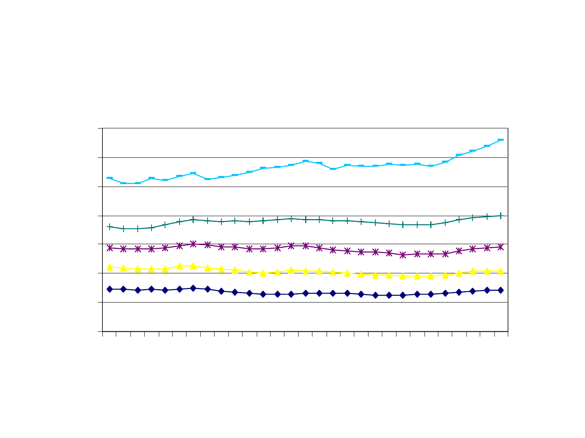
Figure 1: Real Hourly Wage Rates, By Decile,
2000 Dollars
$-
$5.00
$10.00
$15.00
$20.00
$25.00
$30.00
$35.00
1973
1975
1977
1979
1981
1983
1985
1987
1989
1991
1993
1995
1997
1999
2001
Hourly Wage Rate
0
90th
70th
50th
30th
10th
Source: Economic Policy Institute analysis of CPS data. The CPI-Research Series is
used to deflate wages.
Pctl.
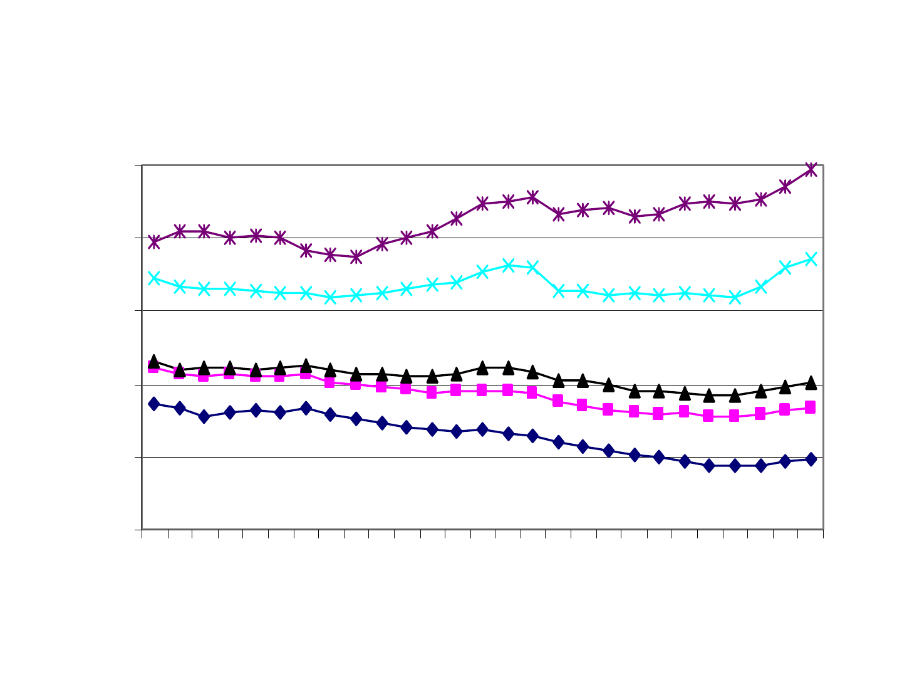
Figure 2: Average Hourly Earnings by Education,
Men (1999 Dollars)
5.00
10.00
15.00
20.00
25.00
30.00
1973
1975
1977
1979
1981
1983
1985
1987
1989
1991
1993
1995
1997
1999
Average Wage Rate
Advanced Degree
College Degree
Some College
HS
< HS
Source: Economic Policy Institute analysis of CPS data.
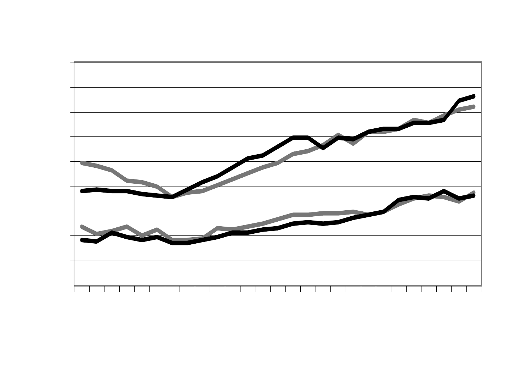
1
1.1
1.2
1.3
1.4
1.5
1.6
1.7
1.8
1.9
1973
1975
1977
1979
1981
1983
1985
1987
1989
1991
1993
1995
1997
1999
W
a
g
e
R
a
t
i
o
College/HS
HS / <HS
Source: Economic Policy Institute analysis of CPS data. Ratios for women are shown in gray,
men in black.
Figure 3: College-High School Wage Ratio and High
School-High School Dropout Wage Ratio, by Sex, 1973-99
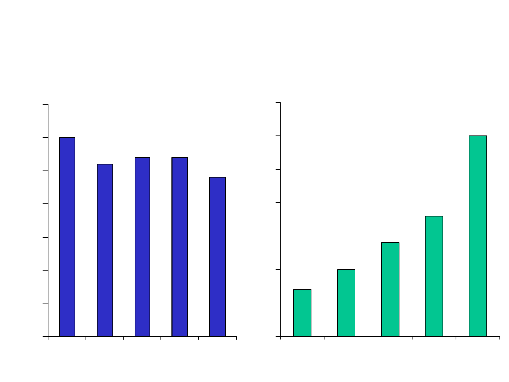
Figure 4: Real Family Annualized Income Growth by
Quintile, Post-War Period
2.6
2.7 2.7
2.4
3.0
0
0.5
1
1.5
2
2.5
3
3.5
0.7
1.4
1.8
1.0
3.0
0
0.5
1
1.5
2
2.5
3
3.5
Bottom Middle Top Bottom Middle Top
Percent Per Year, 1947-73 Percent Per Year, 1973-2000
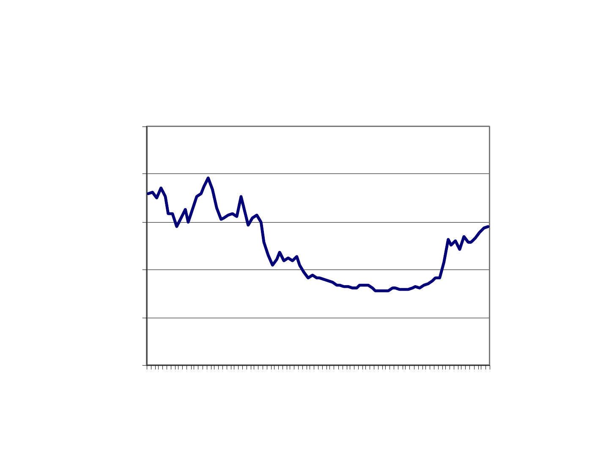
0.00
5.00
10.00
15.00
20.00
25.00
1913
1921
1929
1937
1945
1953
1961
1969
1977
1985
1993
Figure 5: Top 1 Percentile’s Share of Income in the
United States, 1913-98
Source: Piketty and Saez (2001), Figure 3.
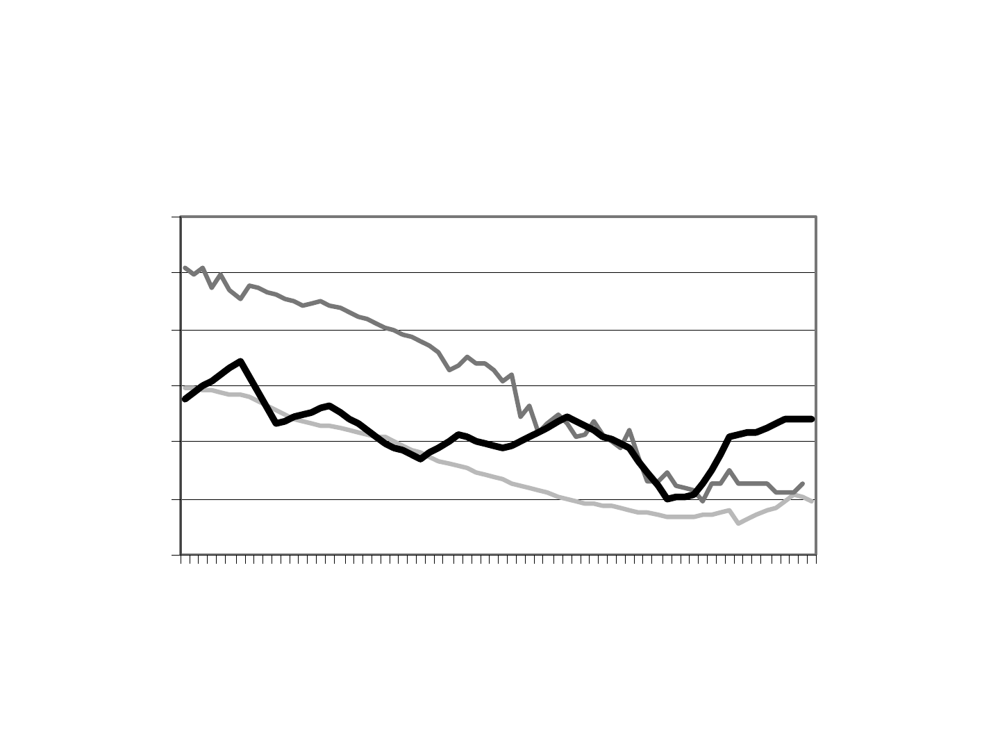
10
20
30
40
50
60
70
1923
1929
1935
1941
1947
1953
1959
1965
1971
1977
1983
1989
Figure 6: Share of Marketable Net Worth Held by Top 1
Percent of Wealthholders: Sweden, United Kingdom, and
United States, 1923-1992
Percent
Source: Wolff (2002), Table 5-1.
UK
Sweden
US
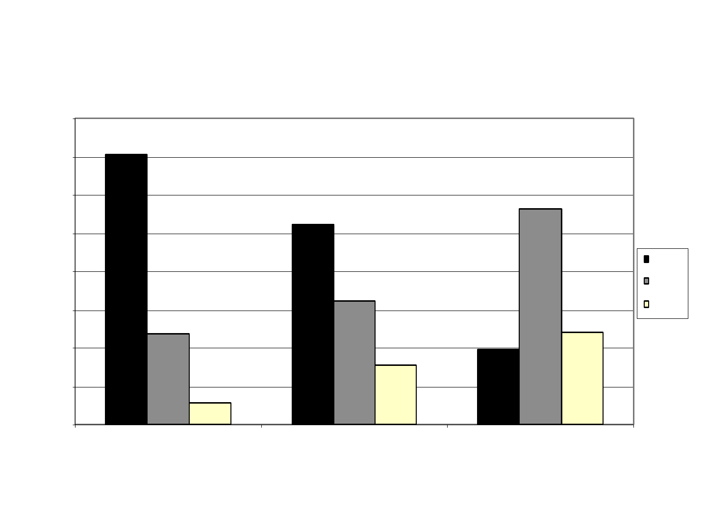
0
10
20
30
40
50
60
70
80
1 Estimate 2-7 Estimates 8+ Estimates
Positive
Negative
Unknown
Figure 7: Percent of Estimates of the Effect of Smaller
Classes that are Positive, Negative or Unknown Sign, by
Number of Estimates Hanushek Extracted from each Study
Average Percent
Notes: Based on data from Hanushek (1997). Arithmetic averages of percent positive, negative and unknown sign are taken over
the studies in each category. See Krueger (2000) for details.
17 Studies
33 Studies
9 Studies
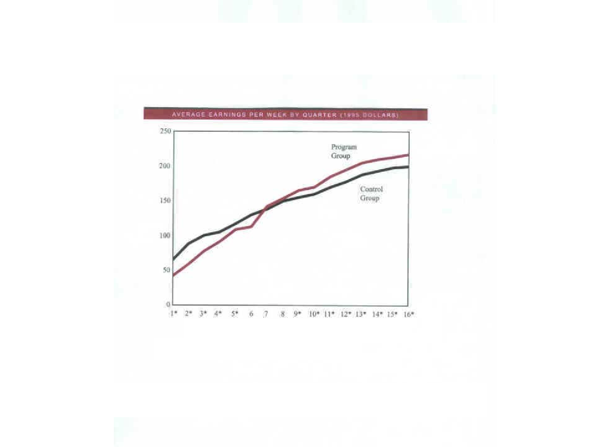
Figure 8: Average Weekly Earnings, Program Group and
Control Group, National Job Corps Study (1995 Dollars)
Source: John Burghardt, Peter Schochet, and Sheena McConnell, et al., “Does Job
Corps Work?” Mathematica Policy Research, Inc., July 2001.
Quarters After Random Assignment
*Difference Statistically Significant.
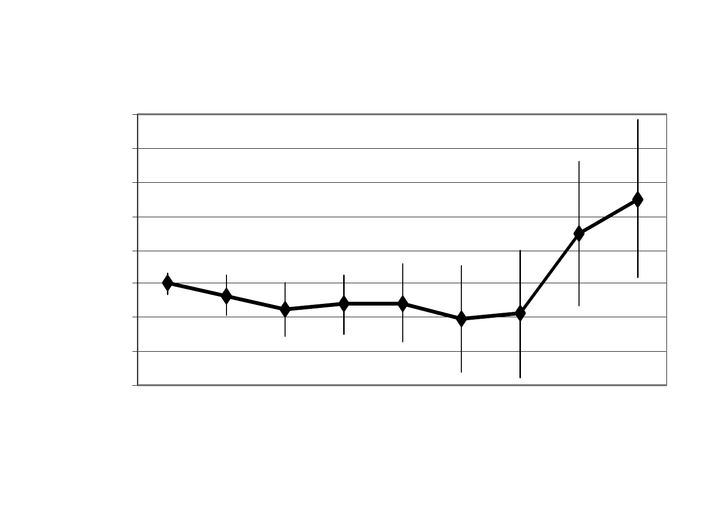
-600
-400
-200
0
200
400
600
800
1000
-3 -2 -1 0 1 2 3 4 5
Years Before or After Random Assignment
Difference in Annual Earnings
Source: Authors Calculations from GAO (1996). The diamond indicates the average control-treatment difference
for men and women. The vertical lines indicate the width of a 95 percent confidence interval.
Figure 9: Five-Year Follow Up of National JTPA Study
Treatment-Control Difference in Mean Earnings, By Year
Average for Male and Female Youths
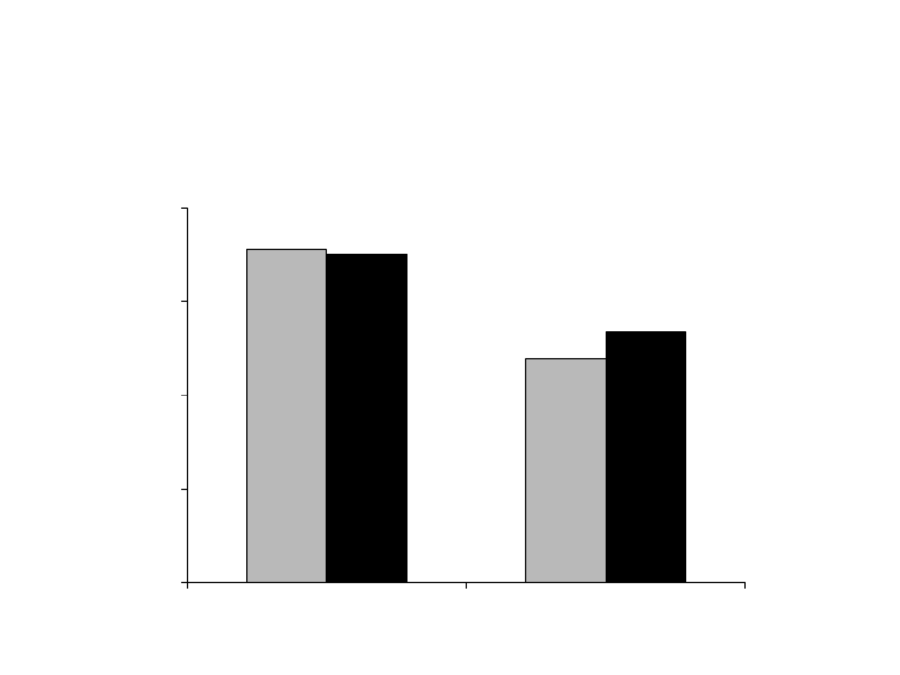
$91,232
$90,144
$67,790
$73,504
$20,000
$40,000
$60,000
$80,000
$100,000
Moderate High
Figure 10: Average Earnings in 1995, by Selectivity of
College Attended for Students who Applied to and were
Accepted by Both Highly and Moderately Selective Colleges
Moderate High
Selectivity of College Attended
Low-Income Parents:
Annual Earnings
All Income Levels:
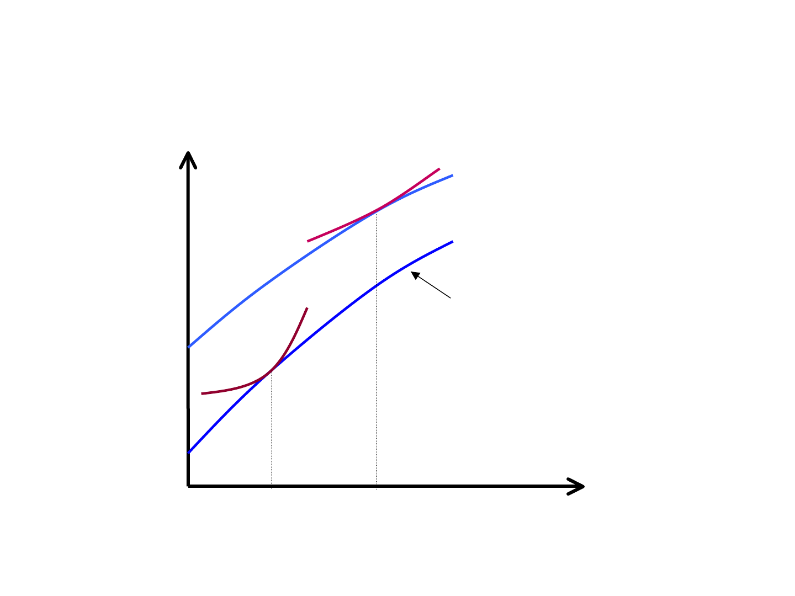
Human Capital
L
o
g
(
E
a
r
n
i
n
g
s
)
Poor
Not Poor
Figure 11a: Illustrative Human Capital Earnings Functions,
with Credit Constraints
H
1
H
2
Structural Earnings
Function
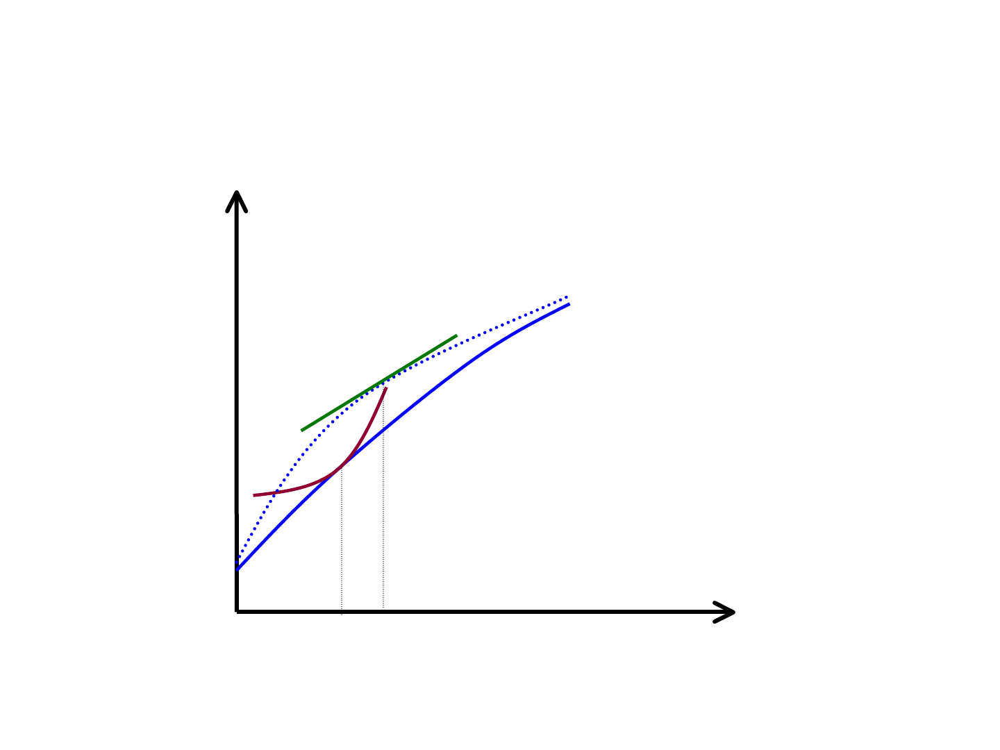
Human Capital
L
o
g
(
E
a
r
n
i
n
g
s
+
E
x
t
e
r
n
a
l
i
t
i
e
s
)
Poor
Figure 11b: Illustrative Human Capital Earnings Functions,
with Credit Constraints and Social Externalities
H
1
H’
1
g
g’